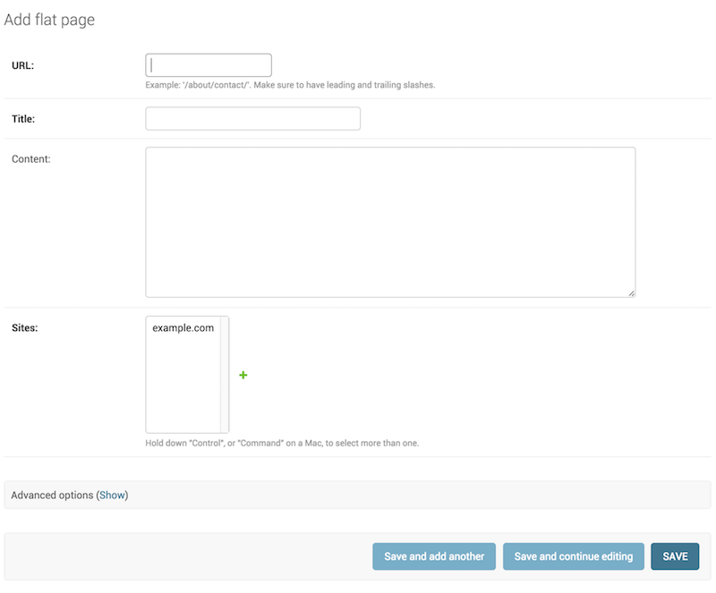
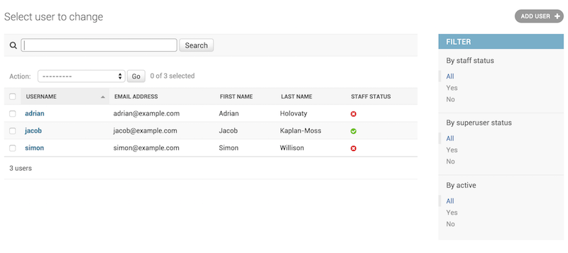

Le site d’administration de Django¶
Une des parties les plus puissantes de Django est l’interface d’administration automatique. Elle lit les métadonnées de vos modèles pour fournir une interface rapide et centrée sur les modèles où les utilisateurs de confiance peuvent gérer le contenu du site. L’utilisation recommandée du site d’administration est limitée à un outil de gestion interne d’un organisme. Il n’est pas conçu pour servir de base à la construction d’une interface publique complète.
Le site d’administration présente de nombreux points d’entrée visant la personnalisation, mais ne vous bornez pas à utiliser exclusivement ces points d’entrée. Si vous avez besoin de fournir une interface plus centrée sur les processus et qui fait abstraction des détails d’implémentation autour des tables et champs de bases de données, c’est qu’il est vraisemblablement le moment d’écrire vos propres vues.
Dans ce document, nous présentons la manière d’activer, d’utiliser et de personnaliser l’interface d’administration de Django.
Aperçu¶
L’administration est activée dans le modèle de projet par défaut utilisé par startproject.
Si vous n’utilisez pas le gabarit de projet par défaut, voici les exigences :
Ajoutez
'django.contrib.admin'et ses dépendances - :django.contrib.auth,django.contrib.contenttypes,django.contrib.messagesetdjango.contrib.sessions- à votre réglageINSTALLED_APPS.Configurez un moteur de gabarit
DjangoTemplatesdans votre réglageTEMPLATESavecdjango.template.context_processors.request,django.contrib.auth.context_processors.authetdjango.contrib.messages.context_processors.messagesdans l’option'context_processors'deOPTIONS.Changed in Django 3.1:django.template.context_processors.requesta été ajouté comme exigence dans l’option'context_processors'afin de prendre en charge la nouvelle barre latéraleAdminSite.enable_nav_sidebar.Si vous avez personnalisé le réglage
MIDDLEWARE,django.contrib.auth.middleware.AuthenticationMiddlewareetdjango.contrib.messages.middleware.MessageMiddlewaredoivent s’y trouver.Insérez les URL d’administration dans votre configuration d’URL.
Après avoir suivi ces étapes, vous serez en mesure d’utiliser le site d’administration en visitant l’URL à laquelle vous l’avez rattaché (/admin/, par défaut).
Si vous avez besoin de créer un utilisateur avec lequel vous connecter, utilisez la commande createsuperuser. Par défaut, la connexion au site d’administration requiert qu’un des attributs is_superuser ou is_staff soit coché (True).
Finalement, déterminez quels modèles de votre application doivent être modifiables dans l’interface d’administration. Pour chacun de ces modèles, inscrivez-les dans l’administration tel qu’indiqué dans ModelAdmin.
Autres sujets¶
Voir aussi
Pour plus d’informations à propos de la manière de servir les fichiers statiques (images, JavaScript et CSS) associés au site d’administration en production, voir Service de fichiers.
Des problèmes ? Essayez FAQ : l’interface d’administration.
Objets ModelAdmin¶
-
class
ModelAdmin¶ La classe
ModelAdminest la représentation d’un modèle dans l’interface d’administration. Normalement, ces classes sont stockées dans un fichier nomméadmin.pydans votre application. Jetons un œil à un exemple deModelAdmin:from django.contrib import admin from myproject.myapp.models import Author class AuthorAdmin(admin.ModelAdmin): pass admin.site.register(Author, AuthorAdmin)
Avez-vous vraiment besoin d’un objet
ModelAdmin?Dans l’exemple précédent, la classe
ModelAdminne définit pas (encore) de valeurs personnalisées. En conséquence, l’interface d’administration par défaut sera fournie. Si celle-ci vous satisfait, vous n’avez pas du tout besoin de définir un objetModelAdmin– vous pouvez inscrire la classe du modèle sans fournir de description de typeModelAdmin. L’exemple précédent pourrait être simplifié en :from django.contrib import admin from myproject.myapp.models import Author admin.site.register(Author)
Le décorateur register¶
-
register(*models, site=django.contrib.admin.sites.site)¶ Il existe aussi un décorateur pour l’enregistrement des classes
ModelAdmin:from django.contrib import admin from .models import Author @admin.register(Author) class AuthorAdmin(admin.ModelAdmin): pass
Il reçoit une ou plusieurs classes de modèles à inscrire à
ModelAdmin. Si vous utilisez une classeAdminSitepersonnalisée, transmettez-la en utilisant le paramètre nommésite:from django.contrib import admin from .models import Author, Editor, Reader from myproject.admin_site import custom_admin_site @admin.register(Author, Reader, Editor, site=custom_admin_site) class PersonAdmin(admin.ModelAdmin): pass
Vous ne pouvez pas utiliser ce décorateur si devez faire référence à la classe d’administration de modèle dans la méthode
__init__(), par ex.super(PersonAdmin, self).__init__(*args, **kwargs). Vous pouvez utilisersuper().__init__(*args, **kwargs).
Découvert des fichiers d’administration¶
Lorsque vous placez 'django.contrib.admin' dans votre réglage INSTALLED_APPS, Django recherche automatiquement un module admin dans chaque application et l’importe.
-
class
apps.AdminConfig¶ Il s’agit de la classe
AppConfigpar défaut pour l’administration. Elle appelleautodiscover()au démarrage de Django.
-
class
apps.SimpleAdminConfig¶ Cette classe fonctionne comme
AdminConfig, sauf qu’elle n’appelle pasautodiscover().-
default_site¶ Un chemin d’importation à syntaxe pointée vers la classe de site d’administration par défaut ou vers un objet exécutable renvoyant une instance de site. La valeur par défaut est
'django.contrib.admin.sites.AdminSite'. Voir Surcharge du site d’administration par défaut pour les instructions d’utilisation.
-
-
autodiscover()¶ Cette fonction tente d’importer un module
admindans chaque application installée. Ces modules sont supposés inscrire des modèles à l’application d’administration.Typiquement, il n’est pas nécessaire d’appeler cette fonction directement car
AdminConfigl’appelle au démarrage de Django.
Si vous utilisez un AdminSite personnalisé, il est courant d’importer toutes les sous-classes de ModelAdmin dans son code et de les inscrire auprès du site AdminSite personnalisé. Dans ce cas et dans l’optique de désactiver la découverte automatique, il s’agit de remplacer 'django.contrib.admin' par 'django.contrib.admin.apps.SimpleAdminConfig' dans le réglage INSTALLED_APPS.
Options de ModelAdmin¶
ModelAdmin est une classe très flexible. Elle dispose de plusieurs options pour pouvoir personnaliser l’interface. Toutes les options sont définies sur la sous-classe ModelAdmin:
from django.contrib import admin
class AuthorAdmin(admin.ModelAdmin):
date_hierarchy = 'pub_date'
-
ModelAdmin.actions¶ Une liste d’actions disponibles sur la page de liste pour modification. Voir Actions d’administration pour plus de détails.
-
ModelAdmin.actions_on_top¶
-
ModelAdmin.actions_on_bottom¶ Contrôle où s’affiche la barre d’actions sur la page. Par défaut, la page de liste pour modification de l’administration affiche les actions en haut de la page (
actions_on_top = True; actions_on_bottom = False).
-
ModelAdmin.actions_selection_counter¶ Contrôle si un compteur de sélection est affiché à côté de la liste déroulante d’actions. Par défaut, la page de liste pour modification de l’administration l’affichera (
actions_selection_counter = True).
-
ModelAdmin.date_hierarchy¶ Attribuez à
date_hierarchyle nom d’un champDateFieldouDateTimeFieldde votre modèle, et la page de liste pour modification inclura une navigation par filtres sélectifs basés sur les dates en fonction de ce champ.Exemple :
date_hierarchy = 'pub_date'
Il est aussi possible d’indiquer un champ d’un modèle lié en utilisant la syntaxe d’accès
__, par exemple :date_hierarchy = 'author__pub_date'
Le contenu de cette navigation est formé intelligemment d’après les données disponibles. Par exemple, si toutes les dates sont dans un seul mois, elle contiendra uniquement les filtres par jour.
Note
date_hierarchyutiliseQuerySet.datetimes()en interne. Veuillez vous référer vous à sa documentation pour certaines mises en garde lorsque la prise en charge des fuseaux horaires est activée (USE_TZ = True).
-
ModelAdmin.empty_value_display¶ Cet attribut surcharge la valeur d’affichage par défaut pour les champs de l’enregistrement qui sont vides (
None, chaîne vide, etc.). La valeur par défaut est-(un tiret). Par exemple :from django.contrib import admin class AuthorAdmin(admin.ModelAdmin): empty_value_display = '-empty-'
Vous pouvez aussi surcharger
empty_value_displaypour toutes les pages d’administration avecAdminSite.empty_value_display, ou pour des champs spécifiques comme ceci :from django.contrib import admin class AuthorAdmin(admin.ModelAdmin): fields = ('name', 'title', 'view_birth_date') def view_birth_date(self, obj): return obj.birth_date view_birth_date.empty_value_display = '???'
-
ModelAdmin.exclude¶ Cet attribut, si fourni, doit être une liste de noms de champs à exclure du formulaire.
Par exemple, considérons le modèle suivant :
from django.db import models class Author(models.Model): name = models.CharField(max_length=100) title = models.CharField(max_length=3) birth_date = models.DateField(blank=True, null=True)
Si vous souhaitez un formulaire pour le modèle
Authorqui ne comprenne que les champsnameettitle, voici comment vous devez spécifierfieldsouexclude:from django.contrib import admin class AuthorAdmin(admin.ModelAdmin): fields = ('name', 'title') class AuthorAdmin(admin.ModelAdmin): exclude = ('birth_date',)
Comme le modèle
Authora seulement trois champs,name,titleetbirth_date, les formulaires obtenus par les déclarations ci-dessus contiendront exactement les mêmes champs.
-
ModelAdmin.fields¶ Utilisez l’option
fieldssi vous avez besoin de réaliser de simples changements dans la disposition des formulaires des pages « ajouter » et « modifier », comme afficher uniquement un sous-ensemble des champs disponibles, modifier leur ordre ou les regrouper en lignes. Par exemple, vous pouvez définir une version simplifiée du formulaire d’administration pour le modèledjango.contrib.flatpages.models.FlatPagecomme suit :class FlatPageAdmin(admin.ModelAdmin): fields = ('url', 'title', 'content')
Dans l’exemple ci-dessus, seuls les champs
url,titleetcontentseront affichés dans le formulaire, de manière séquentielle.fieldspeut contenir des valeurs définies dansModelAdmin.readonly_fieldspour être affichées en lecture seule.Pour des besoins de mise en page plus complexes, voir l’option
fieldsets.L’option
fieldsaccepte les mêmes types de valeurs quelist_display, sauf que les objets exécutables ne sont pas admis. Les noms de méthodes de modèles ou de modèles d’administration ne sont utilisés que s’ils apparaissent dansreadonly_fields.Pour afficher plusieurs champs sur la même ligne, insérez ces champs dans leur propre tuple. Dans cet exemple, les champs
urlettitles’affichent sur la même ligne et le champcontentsera affiché en dessous d’eux sur sa propre ligne :class FlatPageAdmin(admin.ModelAdmin): fields = (('url', 'title'), 'content')
Note
Cette option
fieldsne doit pas être confondue avec la clé de dictionnairefieldsprésente dans l’optionfieldsets, telle que décrite dans la section suivante.Si ni l’option
fields, ni l’optionfieldsetsne sont présentes, Django affiche par défaut chaque champ qui n’est pas unAutoFieldet qui aeditable=Truedans un groupe de champs unique et dans le même ordre de définition des champs que dans le modèle.
-
ModelAdmin.fieldsets¶ Définissez
fieldsetspour contrôler la mise en page des pages d’administration « ajouter » et « modifier ».fieldsetsest une liste de tuples binaires, où chaque tuple représente une balise<fieldset>dans la page du formulaire d’administration (<fieldset>est une « section » d’un formulaire).Les tuples binaires sont au format
(nom, options_champs), oùnomest une chaîne représentant le titre du groupe de champs etoptions_champsest un dictionnaire d’informations sur le groupe de champs, y compris une liste des champs à afficher à l’intérieur.Un exemple complet, tiré du modèle
django.contrib.flatpages.models.FlatPage:from django.contrib import admin class FlatPageAdmin(admin.ModelAdmin): fieldsets = ( (None, { 'fields': ('url', 'title', 'content', 'sites') }), ('Advanced options', { 'classes': ('collapse',), 'fields': ('registration_required', 'template_name'), }), )
Il en résulte une page d’administration qui ressemble à :
Si ni l’option
fieldsets, ni l’optionfieldsne sont présentes, Django affiche par défaut chaque champ qui n’est pas unAutoFieldet qui aeditable=Truedans un groupe de champs unique et dans le même ordre de définition des champs que dans le modèle.Le dictionnaire
field_optionspeut contenir les clés suivantes :fieldsUn tuple de noms de champs à afficher dans ce groupe de champs. Cette clé est obligatoire.
Exemple :
{ 'fields': ('first_name', 'last_name', 'address', 'city', 'state'), }
Comme pour l’option
fields, on peut afficher plusieurs champs sur la même ligne en les incluant dans un tuple. Dans cet exemple, les champsfirst_nameetlast_names’affichent sur la même ligne :{ 'fields': (('first_name', 'last_name'), 'address', 'city', 'state'), }
fieldspeut contenir des valeurs définies dansreadonly_fieldspour être affichées en lecture seule.Si vous placez le nom d’un objet exécutable dans
fields, c’est la même règle qu’avec l’optionfieldsqui s’applique : l’objet exécutable doit figurer dansreadonly_fields.
classesUne liste ou un tuple contenant des classes CSS supplémentaires à appliquer sur le groupe de champs.
Exemple :
{ 'classes': ('wide', 'extrapretty'), }
Deux classes utiles définies par la feuille de style par défaut du site d’administration sont
collapseetwide. Les groupes de champs avec le stylecollapseseront initialement repliés dans l’administration et remplacés par un petit lien « cliquer pour agrandir ». Les groupes de champs avec le stylewidedisposeront d’un espace horizontal supplémentaire.
descriptionUne chaîne de texte supplémentaire facultative affichée au sommet de chaque groupe de champs, sous l’en-tête du groupe. Cette chaîne n’est pas affichée pour
TabularInlineen raison de sa mise en page.Notez que cette valeur ne passe pas par le filtre d’échappement HTML quand elle est affichée dans l’interface d’administration. Cela vous permet d’inclure du code HTML si vous le désirez. Sinon, vous pouvez utiliser du texte brut avec la fonction
django.utils.html.escape()pour échapper les caractères spéciaux HTML.
-
ModelAdmin.filter_horizontal¶ Par défaut, un champ
ManyToManyFieldest affiché dans le site d’administration avec un<select multiple>. Cependant, les boîtes à sélection multiple peuvent être difficiles à utiliser lors de la sélection de nombreux éléments. En ajoutant un champManyToManyFieldà cette liste, cette boîte sera remplacée par une discrète et astucieuse interface de « filtre » JavaScript permettant de rechercher dans les options. Les options non sélectionnés et sélectionnés apparaissent dans deux boîtes côte à côte. Voirfilter_verticalpour utiliser une interface verticale.
-
ModelAdmin.filter_vertical¶ Identique à
filter_horizontal, mais utilise un affichage vertical de l’interface de filtre avec la boîte d’options non sélectionnées apparaissant au-dessus de la boîte d’options sélectionnées.
-
ModelAdmin.form¶ Par défaut, un formulaire
ModelFormest créé dynamiquement pour les modèles. Il est utilisé pour créer le formulaire présenté sur les pages d’ajout/édition. Vous pouvez facilement fournir votre propreModelFormpour surcharger toute forme de comportement par défaut sur les pages d’ajout/édition. Alternativement, vous pouvez personnaliser le formulaire par défaut plutôt que d’en définir un entièrement nouveau en utilisant la méthodeModelAdmin.get_form().Pour un exemple, voir la section Ajout de validation personnalisée à l’administration.
Note
Si vous définissez un attribut
Meta.modeldans unModelForm, vous devez également définir l’attributMeta.fields(ou l’attributMeta.exclude). Cependant, étant donné que l’administration a sa propre façon de définir des champs, l’attributMeta.fieldssera ignoré.Si le
ModelFormest uniquement destiné à l’administration, la solution la plus simple consiste à omettre l’attributMeta.model, puisqueModelAdminfournira le bon modèle à utiliser. Il est aussi possible de définirfields = []dans la classeMetaafin de satisfaire la validation duModelForm.Note
Si les classes
ModelFormetModelAdmindéfinissent toutes deux une optionexclude, alorsModelAdminprévaut :from django import forms from django.contrib import admin from myapp.models import Person class PersonForm(forms.ModelForm): class Meta: model = Person exclude = ['name'] class PersonAdmin(admin.ModelAdmin): exclude = ['age'] form = PersonForm
Dans l’exemple ci-dessus, le champ « age » sera exclu mais le champ « name » sera inclus dans le formulaire généré.
-
ModelAdmin.formfield_overrides¶ Cet attribut fournit une solution « à la va-vite » pour surcharger une partie des options
Fieldutilisées dans l’interface d’administration.formfield_overridesest un dictionnaire associant une classe de champ à un dictionnaire de paramètres à passer audit champ au moment de sa construction.Comme c’est un peu abstrait, examinons un exemple concret. L’utilisation la plus courante de
formfield_overridesest d’ajouter un composant personnalisé pour un certain type de champ. Ainsi, imaginons que nous avons écrit un composantRichTextEditorWidgetque nous aimerions utiliser pour les champs de texte étendus en lieu et place du<textarea>par défaut . Voici comment nous pourrions le faire :from django.contrib import admin from django.db import models # Import our custom widget and our model from where they're defined from myapp.models import MyModel from myapp.widgets import RichTextEditorWidget class MyModelAdmin(admin.ModelAdmin): formfield_overrides = { models.TextField: {'widget': RichTextEditorWidget}, }
Notez que la clé dans le dictionnaire est la véritable classe du champ, et non pas une chaîne. La valeur est un autre dictionnaire ; ces paramètres seront passés à la méthode
__init__()du champ de formulaire. Voir L’API des formulaires pour plus de détails.Avertissement
Si vous souhaitez utiliser un composant personnalisé avec un champ de relation (par ex.
ForeignKeyouManyToManyField), assurez-vous que vous n’avez pas inclus le nom de ce champ dansraw_id_fields,radio_fieldsouautocomplete_fields.formfield_overridesne vous laissera pas modifier le composant sur les champs de relations contenus dansraw_id_fields,radio_fieldsouautocomplete_fields. C’est parce queraw_id_fields,radio_fieldsetautocomplete_fieldsimpliquent déjà l’utilisation de composants personnalisés.
-
ModelAdmin.inlines¶ Voir les objets
InlineModelAdminci-dessous ainsi queModelAdmin.get_formsets_with_inlines().
-
ModelAdmin.list_display¶ Définissez
list_displaypour contrôler quels champs sont affichés sur la page de liste pour modification de l’interface d’administration.Exemple :
list_display = ('first_name', 'last_name')
Si
list_displayn’est pas défini, le site d’administration affichera une seule colonne avec la représentation__str__()de chaque objet.list_displaypeut contenir quatre types différents de valeurs :Le nom d’un champ de modèle. Par exemple :
class PersonAdmin(admin.ModelAdmin): list_display = ('first_name', 'last_name')
Un objet exécutable qui accepte un paramètre, l’instance de modèle. Par exemple :
def upper_case_name(obj): return ("%s %s" % (obj.first_name, obj.last_name)).upper() upper_case_name.short_description = 'Name' class PersonAdmin(admin.ModelAdmin): list_display = (upper_case_name,)
Une chaîne représentant une méthode de
ModelAdminacceptant un paramètre, l’instance de modèle. Par exemple :class PersonAdmin(admin.ModelAdmin): list_display = ('upper_case_name',) def upper_case_name(self, obj): return ("%s %s" % (obj.first_name, obj.last_name)).upper() upper_case_name.short_description = 'Name'
Une chaîne représentant un attribut ou une méthode de modèle (sans paramètre obligatoire). Par exemple :
from django.contrib import admin from django.db import models class Person(models.Model): name = models.CharField(max_length=50) birthday = models.DateField() def decade_born_in(self): return self.birthday.strftime('%Y')[:3] + "0's" decade_born_in.short_description = 'Birth decade' class PersonAdmin(admin.ModelAdmin): list_display = ('name', 'decade_born_in')
Quelques cas particuliers à signaler à propos de
list_display:Si ce champ est une clé
ForeignKey, Django affichera le__str__()de l’objet correspondant.Les champs
ManyToManyFieldne sont pas pris en charge, parce que cela impliquerait l’exécution d’une instruction SQL pour chaque ligne de la table. Si vous voulez néanmoins le faire, donnez à votre modèle une méthode personnalisée, et ajouter le nom de cette méthode àlist_display. (Voir ci-dessous pour en savoir plus sur les méthodes personnalisées danslist_display.)Si le champ est un
BooleanField, Django affiche une jolie icône actif/inactif au lieu des valeursTrueouFalse.Si la chaîne donnée est une méthode du modèle, un
ModelAdminou un objet exécutable, Django échappe par défaut le résultat HTML obtenu. Pour échapper les données fournies par l’utilisateur et autoriser vos propres balises non échappées, utilisezformat_html().Voici un exemple complet de modèle :
from django.contrib import admin from django.db import models from django.utils.html import format_html class Person(models.Model): first_name = models.CharField(max_length=50) last_name = models.CharField(max_length=50) color_code = models.CharField(max_length=6) def colored_name(self): return format_html( '<span style="color: #{};">{} {}</span>', self.color_code, self.first_name, self.last_name, ) class PersonAdmin(admin.ModelAdmin): list_display = ('first_name', 'last_name', 'colored_name')
Comme certains exemples l’ont déjà montré, lorsqu’on fait référence à un objet exécutable, une méthode de modèle ou de
ModelAdmin, il est possible de personnaliser le titre de la colonne en ajoutant un attributshort_descriptionà l’objet en question.Si la valeur d’un champ est
None, une chaîne vide ou une itération vide, Django affichera-(un tiret). Vous pouvez surcharger cela avecAdminSite.empty_value_display:from django.contrib import admin admin.site.empty_value_display = '(None)'
Vous pouvez aussi utiliser
ModelAdmin.empty_value_display:class PersonAdmin(admin.ModelAdmin): empty_value_display = 'unknown'
Ou au niveau d’un champ :
class PersonAdmin(admin.ModelAdmin): list_display = ('name', 'birth_date_view') def birth_date_view(self, obj): return obj.birth_date birth_date_view.empty_value_display = 'unknown'
Si la chaîne donnée est une méthode du modèle, un
ModelAdminou un objet exécutable qui renvoieTrueouFalse, Django affiche une jolie icône actif/inactif si vous donnez à la méthode un attributbooleanavec la valeurTrue.Voici un exemple complet de modèle :
from django.contrib import admin from django.db import models class Person(models.Model): first_name = models.CharField(max_length=50) birthday = models.DateField() def born_in_fifties(self): return self.birthday.strftime('%Y')[:3] == '195' born_in_fifties.boolean = True class PersonAdmin(admin.ModelAdmin): list_display = ('name', 'born_in_fifties')
La méthode
__str__()est tout aussi valable pourlist_displayque pour toute autre méthode de modèle, il est donc tout à fait correct d’écrire :list_display = ('__str__', 'some_other_field')
Habituellement, les éléments de
list_displayqui ne sont pas de véritables champs de base de données ne peuvent pas être utilisés dans le tri (parce que Django réalise tout le tri au niveau de la base de données).Cependant, si un élément de
list_displayreprésente un certain champ de base de données, vous pouvez indiquer ce fait en définissant l’attributadmin_order_fieldde l’élément.Par exemple :
from django.contrib import admin from django.db import models from django.utils.html import format_html class Person(models.Model): first_name = models.CharField(max_length=50) color_code = models.CharField(max_length=6) def colored_first_name(self): return format_html( '<span style="color: #{};">{}</span>', self.color_code, self.first_name, ) colored_first_name.admin_order_field = 'first_name' class PersonAdmin(admin.ModelAdmin): list_display = ('first_name', 'colored_first_name')
Ce qui précède indique à Django de trier selon le champ
first_namelorsqu’on essaye de trier parcolored_first_namedans l’administration.Pour indiquer un ordre décroissant avec
admin_order_field, vous pouvez préfixer le nom de champ par un tiret. En utilisant l’exemple ci-dessus, cela ressemblerait à :colored_first_name.admin_order_field = '-first_name'
admin_order_fieldsait gérer les requêtes triées par valeurs de modèles liés. Cet exemple inclut une colonne « author first name » dans l’affichage en liste et permet de le trier en fonction du prénom (first name) :class Blog(models.Model): title = models.CharField(max_length=255) author = models.ForeignKey(Person, on_delete=models.CASCADE) class BlogAdmin(admin.ModelAdmin): list_display = ('title', 'author', 'author_first_name') def author_first_name(self, obj): return obj.author.first_name author_first_name.admin_order_field = 'author__first_name'
Les expressions de requête peuvent être utilisés dans
admin_order_field. Par exemplefrom django.db.models import Value from django.db.models.functions import Concat class Person(models.Model): first_name = models.CharField(max_length=50) last_name = models.CharField(max_length=50) def full_name(self): return self.first_name + ' ' + self.last_name full_name.admin_order_field = Concat('first_name', Value(' '), 'last_name')
Les éléments de
list_displaypeuvent également être des propriétés. Notez toutefois qu’en raison de la façon dont fonctionnent les propriétés en Python, définirshort_descriptionouadmin_order_fieldsur une propriété n’est possible que lors de l’utilisation de la fonctionproperty()et non pas avec le décorateur@property.Par exemple :
class Person(models.Model): first_name = models.CharField(max_length=50) last_name = models.CharField(max_length=50) def my_property(self): return self.first_name + ' ' + self.last_name my_property.short_description = "Full name of the person" my_property.admin_order_field = 'last_name' full_name = property(my_property) class PersonAdmin(admin.ModelAdmin): list_display = ('full_name',)
Les noms de champs dans
list_displayapparaissent également comme des classes CSS dans le résultat HTML, sous la formecolonne-<nom_de_champ>sur chaque élément<th>. Cela peut être utilisé par exemple pour définir la largeur des colonnes dans un fichier CSS.Django essaie d’interpréter chaque élément de
list_displaydans cet ordre :- Un champ de modèle.
- Un objet exécutable.
- Une chaîne représentant un attribut
ModelAdmin. - Une chaîne représentant un attribut de modèle.
Par exemple, si
first_nameest à la fois un champ de modèle et un attributModelAdmin, c’est le champ de modèle qui sera utilisé.
-
ModelAdmin.list_display_links¶ Utilisez
list_display_linkspour contrôler le cas échéant quels champs delist_displaydoivent faire le lien vers la page de modification d’un objet.Par défaut, la page de liste pour modification lie la première colonne – le premier champ figurant dans
list_display– à la page de modification de chaque élément. Maislist_display_linkspermet de modifier cela :Définissez-le à
Nonepour qu’aucun lien n’apparaisse.Définissez-le à une liste ou un tuple de champs (dans le même format que
list_display) dont les colonnes doivent être converties en liens.Vous pouvez indiquer un ou plusieurs champs. Tant que les champs apparaissent dans
list_display, Django ne se soucie pas de combien (ou comment) les champs sont liés. La seule exigence est que si vous souhaitez utiliserlist_display_linksde cette façon, vous devez définirlist_display.
Dans cet exemple, les champs
first_nameetlast_nameferont toutes deux office de lien sur la page de liste pour modification :class PersonAdmin(admin.ModelAdmin): list_display = ('first_name', 'last_name', 'birthday') list_display_links = ('first_name', 'last_name')
Dans cet exemple, la page de liste pour modification ne contient aucun lien :
class AuditEntryAdmin(admin.ModelAdmin): list_display = ('timestamp', 'message') list_display_links = None
-
ModelAdmin.list_editable¶ Définissez
list_editableà une liste de noms de champs de modèle afin de permettre l’édition de ces champs sur la page de liste pour modification. C’est-à-dire que les champs répertoriés danslist_editableseront affichés sous forme de composants de formulaire sur la page de liste pour modification, permettant aux utilisateurs de modifier et d’enregistrer plusieurs lignes à la fois.Note
list_editableinteragit avec un certain nombre d’autres options de façon bien particulière ; vous devez respecter les règles suivantes :- Tout champ dans
list_editabledoit également figurer danslist_display. Vous ne pouvez pas modifier un champ qui n’est pas affiché ! - Un même champ ne peut pas être défini à la fois dans
list_editableet danslist_display_links– un champ ne peut pas être à la fois un formulaire et un lien.
Vous obtiendrez une erreur de validation si l’une de ces règles est enfreinte.
- Tout champ dans
-
ModelAdmin.list_filter¶ Définissez
list_filterpour activer des filtres dans la barre de droite de la page de liste pour modification de l’administration, comme illustré dans la capture d’écran suivante :list_filterdoit être une liste ou un tuple d’éléments, où chaque élément doit être l’un des types suivants :un nom de champ, où le champ doit être soit un
BooleanField,CharField,DateField,DateTimeField,IntegerField,ForeignKeyou unManyToManyField; par exemple :class PersonAdmin(admin.ModelAdmin): list_filter = ('is_staff', 'company')
Les noms de champ dans
list_filterpeuvent également s’étendre aux relations à l’aide de la syntaxe de recherche__, par exemple :class PersonAdmin(admin.UserAdmin): list_filter = ('company__name',)
une classe héritant de
django.contrib.admin.SimpleListFilter, qui doit contenir les attributstitleetparameter_nameainsi que surcharger les méthodeslookupsetqueryset, par ex. :from datetime import date from django.contrib import admin from django.utils.translation import gettext_lazy as _ class DecadeBornListFilter(admin.SimpleListFilter): # Human-readable title which will be displayed in the # right admin sidebar just above the filter options. title = _('decade born') # Parameter for the filter that will be used in the URL query. parameter_name = 'decade' def lookups(self, request, model_admin): """ Returns a list of tuples. The first element in each tuple is the coded value for the option that will appear in the URL query. The second element is the human-readable name for the option that will appear in the right sidebar. """ return ( ('80s', _('in the eighties')), ('90s', _('in the nineties')), ) def queryset(self, request, queryset): """ Returns the filtered queryset based on the value provided in the query string and retrievable via `self.value()`. """ # Compare the requested value (either '80s' or '90s') # to decide how to filter the queryset. if self.value() == '80s': return queryset.filter(birthday__gte=date(1980, 1, 1), birthday__lte=date(1989, 12, 31)) if self.value() == '90s': return queryset.filter(birthday__gte=date(1990, 1, 1), birthday__lte=date(1999, 12, 31)) class PersonAdmin(admin.ModelAdmin): list_filter = (DecadeBornListFilter,)
Note
Par commodité, l’objet
HttpRequestest transmis aux méthodeslookupsetqueryset, par exemple :class AuthDecadeBornListFilter(DecadeBornListFilter): def lookups(self, request, model_admin): if request.user.is_superuser: return super().lookups(request, model_admin) def queryset(self, request, queryset): if request.user.is_superuser: return super().queryset(request, queryset)
Aussi par commodité, l’objet
ModelAdminest transmis à la méthodelookups, par exemple si vous souhaitez établir les filtres à partir des données disponibles :class AdvancedDecadeBornListFilter(DecadeBornListFilter): def lookups(self, request, model_admin): """ Only show the lookups if there actually is anyone born in the corresponding decades. """ qs = model_admin.get_queryset(request) if qs.filter(birthday__gte=date(1980, 1, 1), birthday__lte=date(1989, 12, 31)).exists(): yield ('80s', _('in the eighties')) if qs.filter(birthday__gte=date(1990, 1, 1), birthday__lte=date(1999, 12, 31)).exists(): yield ('90s', _('in the nineties'))
un tuple, où le premier élément est un nom de champ et le second élément est une classe héritant de
django.contrib.admin.FieldListFilter, par exemple :class PersonAdmin(admin.ModelAdmin): list_filter = ( ('is_staff', admin.BooleanFieldListFilter), )
Vous pouvez limiter les choix d’un modèle lié aux objets concernés par la relation en utilisant
RelatedOnlyFieldListFilter:class BookAdmin(admin.ModelAdmin): list_filter = ( ('author', admin.RelatedOnlyFieldListFilter), )
En supposant que
authorest une cléForeignKeyvers un modèleUser, cela va limiter les choix delist_filteraux utilisateurs qui ont écrit un livre au lieu d’énumérer tous les utilisateurs.Vous pouvez filtrer les valeurs vides avec
EmptyFieldListFilter, qui est capable de filtrer à la fois les chaînes vides et les valeurs nulles, en fonction de ce que le champ permet de stockerclass BookAdmin(admin.ModelAdmin): list_filter = ( ('title', admin.EmptyFieldListFilter), )
Note
L’API
FieldListFilterest considérée comme interne et pourrait changer.Note
Le champ
GenericForeignKeyn’est pas pris en charge.New in Django 3.1:La classe
EmptyFieldListFiltera été ajoutée.
Les filtres de listes n’apparaissent que lorsque le filtre présente plus d’un choix. La méthode
has_output()du filtre vérifie cette condition.Il est possible de spécifier un gabarit personnalisé pour le rendu d’un filtre de liste :
class FilterWithCustomTemplate(admin.SimpleListFilter): template = "custom_template.html"
Voir le gabarit par défaut fourni par Django (
admin/filter.html) pour un exemple concret.
-
ModelAdmin.list_max_show_all¶ Définissez
list_max_show_allpour contrôler le nombre d’éléments pouvant figurer sur la page de liste pour modification « Tout afficher » de l’administration. L’administration affiche un lien « Tout afficher » sur la liste pour modification seulement si le nombre total de résultats est inférieur ou égal à la valeur de cet attribut. Par défaut, cette option est définie à200.
-
ModelAdmin.list_per_page¶ Définissez
list_per_pagepour contrôler le nombre d’éléments paginés apparaissant sur chaque page de la liste pour modification de l’administration. Par défaut, cette option est définie à100.
Définissez
list_select_relatedpour indiquer à Django d’utiliserselect_related()lors de la récupération de la liste des objets sur la page de liste pour modification de l’administration. Cela peut vous épargner un bon nombre de requêtes en base de données.La valeur peut être soit une valeur booléenne, soit une liste ou un tuple. La valeur par défaut est
False.Lorsque la valeur est
True,select_related()sera toujours appelée. Lorsque la valeur est réglée surFalse, Django examinelist_displayet n’appelleselect_related()que si une cléForeignKeyest présente.Si vous avez besoin d’un contrôle plus fin, utilisez un tuple (ou une liste) comme valeur de
list_select_related. Un tuple vide empêchera Django d’appelerselect_relateddans tous les cas. Tout autre tuple sera directement transmis àselect_relatedcomme paramètres. Par exemple :class ArticleAdmin(admin.ModelAdmin): list_select_related = ('author', 'category')
appellera
select_related('author', 'category').Si vous avez besoin de définir une valeur dynamique en fonction de la requête, vous pouvez implémenter une méthode
get_list_select_related().Note
ModelAdminignore cet attribut lorsqueselect_related()a déjà été appelée pour la requêteQuerySetde la liste pour modification.
-
ModelAdmin.ordering¶ Définissez
orderingpour préciser comment les listes d’objets doivent être ordonnées dans les vues d’administration de Django. La valeur doit être une liste ou un tuple dans le même format que le paramètre de modèleordering.Si ce paramètre n’est pas renseigné, l’administration de Django utilise l’ordre de tri par défaut du modèle.
Si vous avez besoin de définir un ordre dynamique (par exemple en fonction de l’utilisateur ou de la langue), vous pouvez implémenter une méthode
get_ordering().Considérations de performance pour les tris
Pour garantir un ordre de résultats déterministe, la liste pour modification ajoute
pkaux critères de tri si elle ne trouve pas un champ ou un ensemble de champs garantissant un tri univoque.Par exemple, si le tri par défaut se fait sur un champ
nomnon unique, la liste pour modification sera triée parnometpk. Cela pourrait dégrader les performances s’il y a beaucoup de résultats et qu’il n’y a pas d’index sur``nom`` etpk.
-
ModelAdmin.paginator¶ La classe de pagination à utiliser pour la pagination. Par défaut,
django.core.paginator.Paginatorest utilisée. Si la classe de pagination personnalisée n’a pas la même interface de constructeur quedjango.core.paginator.Paginator, vous devez également fournir une implémentation pourModelAdmin.get_paginator().
-
ModelAdmin.prepopulated_fields¶ Définissez
prepopulated_fieldsà un dictionnaire associant des noms de champs aux champs à partir desquels ils doivent être pré-remplis :class ArticleAdmin(admin.ModelAdmin): prepopulated_fields = {"slug": ("title",)}
Lorsque cet attribut est défini, lesdits champs utiliseront un peu de JavaScript pour se pré-remplir à partir des champs désignés. L’utilisation principale de cette fonctionnalité est de générer automatiquement la valeur des champs
SlugFieldà partir d’un ou plusieurs autres champs. La valeur générée est produite par la concaténation des valeurs des champs source, puis par transformation de ce résultat en une étiquette courte et valide, le « slug » (par ex. le remplacement des espaces par des tirets, la mise en minuscules des lettres ASCII ou la suppression de certains mots vides anglais comme « a », « an », « as »).Les champs préremplis ne sont pas modifiés par JavaScript après qu’une valeur a été enregistrée. Il n’est généralement pas souhaitable que les « slugs » changent (ce qui provoquerait le changement de l’URL de l’objet si le slug en fait partie).
prepopulated_fieldsn’accepte pas les champsDateTimeField,ForeignKey,OneToOneFieldouManyToManyField.
-
ModelAdmin.preserve_filters¶ Par défaut, les filtres appliqués sur la vue de liste après la création, l’édition ou la suppression d’un objet sont préservés. Vous pouvez forcer la réinitialisation des filtres en définissant cet attribut à
False.
-
ModelAdmin.radio_fields¶ Par défaut, l’interface d’administration de Django utilise une interface de boîte de sélection (<select>) pour les champs
ForeignKeyou ceux qui ont un attributchoicesdéfini. Si un champ est présent dansradio_fields, Django utilise plutôt une interface de type boutons-radio. En supposant quegroupest une cléForeignKeysur le modèlePerson:class PersonAdmin(admin.ModelAdmin): radio_fields = {"group": admin.VERTICAL}
Vous avez le choix d’utiliser
HORIZONTALouVERTICALdu moduledjango.contrib.admin.N’incluez un champ dans
radio_fieldsque s’il s’agit d’un champForeignKeyou que son attributchoicesest défini.
-
ModelAdmin.autocomplete_fields¶ autocomplete_fieldsest une liste de champsForeignKeyet/ouManyToManyFieldque vous souhaitez transformer en composants auto-complétés Select2.Par défaut, l’interface d’administration utilise une interface de boîte de sélection (
<select>) pour ces champs. Parfois, vous ne voulez pas subir la lenteur engendrée par la sélection de toutes les instances liées pour l’affichage dans la liste déroulante.Le composant Select2 ressemble à la liste déroulante par défaut mais apporte une fonction de recherche qui charge les options de manière asynchrone. C’est plus rapide et plus intuitif dans les cas où le modèle lié possède de nombreuses instances.
Vous devez définir
search_fieldsdans la classeModelAdminde l’objet lié dans la mesure où la recherche d’auto-complétion l’utilise.Pour empêcher la divulgation non autorisée de données, les utilisateurs doivent posséder la permission d’affichage ou de modification sur l’objet lié pour pouvoir utiliser l’autocomplétion.
Le tri et la pagination des résultats sont contrôlés par les méthodes
get_ordering()etget_paginator()duModelAdminlié correspondant.Dans l’exemple suivant,
ChoiceAdminpossède un champ auto-complété pour la cléForeignKeyversQuestion. Les résultats sont filtrés par le champquestion_textet triés par le champdate_created:class QuestionAdmin(admin.ModelAdmin): ordering = ['date_created'] search_fields = ['question_text'] class ChoiceAdmin(admin.ModelAdmin): autocomplete_fields = ['question']
Considérations de performance pour les gros jeux de données
Le tri selon
ModelAdmin.orderingpeut provoquer des problèmes de performance car le tri sur de gros volumes de données est lent.De même, si vos champs de recherche comprennent des champs qui ne sont pas indexés dans la base de données, les performances peuvent en souffrir pour des tables vraiment très grandes.
Dans ces cas, il peut être judicieux d’écrire votre propre implémentation de
ModelAdmin.get_search_results()en utilisant une recherche plein texte indexée.Il peut aussi valoir la peine de modifier le
Paginatorpour les très grandes tables car le paginateur par défaut effectue toujours une requêtecount(). Par exemple, vous pourriez surcharger l’implémentation par défaut de la propriétéPaginator.count.
-
ModelAdmin.raw_id_fields¶ Par défaut, l’interface d’administration de Django utilise une interface de boîte de sélection (<select>) pour les champs
ForeignKey. Parfois, vous ne voulez pas subir la lenteur engendrée par la sélection de toutes les instances liées pour l’affichage dans la liste déroulante.raw_id_fieldsest une liste de champs que vous souhaitez modifier par un simple composantInput, que ce soit un champForeignKeyouManyToManyField:class ArticleAdmin(admin.ModelAdmin): raw_id_fields = ("newspaper",)
Le composant
Inputderaw_id_fieldsdoit contenir une clé primaire si le champ est une cléForeignKeyou une liste de valeurs séparées par des virgules si le champ est unManyToManyField. Le composantraw_id_fieldsprésente un bouton en forme de loupe à côté du champ permettant aux utilisateurs de rechercher et de sélectionner une valeur :
-
ModelAdmin.readonly_fields¶ Par défaut, l’interface d’administration affiche tous les champs de manière éditable. Tous les champs présents dans cette option (qui doit être une liste ou un tuple) afficheront leurs données en l’état et seront non modifiables ; ils seront également exclus du formulaire
ModelFormutilisé pour la création et l’édition. Notez que lorsque vous renseignezModelAdmin.fieldsouModelAdmin.fieldsets, les champs en lecture seule doivent être présents si vous voulez qu’ils apparaissent (sinon, ils sont ignorés).Si
readonly_fieldsest utilisé sans ordre explicite défini parModelAdmin.fieldsouModelAdmin.fieldsets, ils seront ajoutés en dernier après tous les champs modifiables.Un champ en lecture seule n’est pas limité à l’affichage des données d’un champ de modèle, il peut également afficher le résultat d’une méthode de modèle ou d’une méthode de la classe
ModelAdmin. C’est très similaire à la façon dontModelAdmin.list_displayfonctionne. Cela fournit un moyen pour faire présenter à l’interface d’administration des informations sur l’état des objets en cours d’édition, par exemple :from django.contrib import admin from django.utils.html import format_html_join from django.utils.safestring import mark_safe class PersonAdmin(admin.ModelAdmin): readonly_fields = ('address_report',) def address_report(self, instance): # assuming get_full_address() returns a list of strings # for each line of the address and you want to separate each # line by a linebreak return format_html_join( mark_safe('<br>'), '{}', ((line,) for line in instance.get_full_address()), ) or mark_safe("<span class='errors'>I can't determine this address.</span>") # short_description functions like a model field's verbose_name address_report.short_description = "Address"
-
ModelAdmin.save_as¶ Définissez
save_aspour activer la fonctionnalité « enregistrer comme nouveau » des formulaires d’édition de l’administration.Normalement, les objets ont trois options d’enregistrement : « Enregistrer », « Enregistrer et continuer les modifications » et « Enregistrer et ajouter un nouveau ». Si
save_asvautTrue, « Enregistrer et ajouter un nouveau » est remplacé par un bouton « Enregistrer comme nouveau » qui crée un nouvel objet (avec un nouvel identifiant) plutôt que de mettre à jour l’objet existant.Par défaut,
save_asest défini àFalse.
-
ModelAdmin.save_as_continue¶ Lorsque
save_as=True, la redirection par défaut après l’enregistrement du nouvel objet se fait vers la vue pour modification de cet objet. Si vous définissezsave_as_continue=False, la redirection se fera vers la vue de liste pour modification.Par défaut,
save_as_continueest défini àTrue.
-
ModelAdmin.save_on_top¶ Définissez
save_on_toppour ajouter les boutons d’enregistrement au sommet des formulaires d’édition de l’administration.Normalement, les boutons d’enregistrement apparaissent uniquement au bas des formulaires. Si vous définissez
save_on_top, les boutons apparaîtront à la fois en haut et en bas.Par défaut,
save_on_topest défini àFalse.
-
ModelAdmin.search_fields¶ Définissez
search_fieldspour activer une boîte de recherche sur la page de liste pour édition de l’administration. Cet attribut doit contenir une liste de noms de champs qui seront recherchés chaque fois que quelqu’un soumet une requête de recherche dans cette zone de texte.Ces champs doivent être de type texte, tel que
CharFieldouTextField. Vous pouvez également effectuer une recherche connexe sur une cléForeignKeyou un champManyToManyFieldavec la notation « relationnelle » de l’API de recherche :search_fields = ['foreign_key__related_fieldname']
Par exemple, si une entrée de blog contient un auteur, la définition suivante permettrait de rechercher les entrées du blog selon l’adresse électronique de l’auteur :
search_fields = ['user__email']
Lorsque quelqu’un effectue une recherche via la boîte de recherche de l’administration, Django divise la requête de recherche en mots et renvoie tous les objets qui contiennent tous les mots, insensibles à la casse (en utilisant la recherche
icontains), où chaque mot doit être dans au moins un des champssearch_fields. Par exemple, sisearch_fieldsest défini à['first_name', 'last_name']et qu’un utilisateur recherchejohn lennon, Django exécutera l’équivalent de cette clause SQLWHERE:WHERE (first_name ILIKE '%john%' OR last_name ILIKE '%john%') AND (first_name ILIKE '%lennon%' OR last_name ILIKE '%lennon%')
Si vous ne souhaitez pas utiliser la recherche
icontains, vous pouvez forcer une autre recherche en l’ajoutant à la suite du champ. Par exemple, il est possible d’utiliserexacten définissantsearch_fieldsà['first_name__exact'].Soyez conscient qu’en raison de la coupure des termes de recherche qui sont ensuite combinés avec
ANDcomme expliqué précédemment, la recherche avecexactne fonctionne qu’avec un seul mot de recherche puisque deux ou plusieurs mots ne peuvent pas tous être des correspondances exactes (sauf si tous les mots sont les mêmes).Certains (anciens) raccourcis pour l’indication de recherche de champ sont aussi disponibles. Vous pouvez préfixer un champ de
search_fieldspar les caractères suivants qui sont équivalents à l’ajout de__<recherche>à la suite du champ :Préfixe Requête ^ startswith= iexact@ searchAucun(e) icontainsSi vous avez besoin de personnaliser la recherche, vous pouvez utiliser
ModelAdmin.get_search_results()pour fournir un comportement de recherche supplémentaire ou différent.
-
ModelAdmin.show_full_result_count¶ Définissez
show_full_result_countpour définir si le nombre total d’objets doit être affiché sur une page d’administration filtrée (par exemple99 résultats (103 au total)). Si cette option est définie àFalse, un texte du style99 résultats (tout afficher)s’affiche à la place.La valeur par défaut
show_full_result_count=Truegénère une requête pour connaître le nombre total d’objets de la table, ce qui peut être coûteux si la table contient un grand nombre de lignes.
-
ModelAdmin.sortable_by¶ Par défaut, la page de liste pour modification autorise le tris selon tous les champs de modèles (et les objets exécutables ayant la propriété
admin_order_field) indiqués danslist_display.Si vous souhaitez désactiver le tri pour certaines colonnes, définissez
sortable_byà une collection (par ex.list,tupleouset) sous-ensemble delist_displayqui sont susceptibles d’être triés. Une collection vide désactive le tri pour toutes les colonnes.Si vous avez besoin de définir cette liste dynamiquement, vous pouvez implémenter une méthode
get_sortable_by().
-
ModelAdmin.view_on_site¶ Définissez
view_on_sitepour contrôler l’affichage du lien « Voir sur le site ». Ce lien est censé diriger vers une URL où l’objet enregistré peut être affiché.Cet attribut peut soit être une valeur booléenne, soit un objet exécutable. Quand il vaut
True(par défaut), la méthodeget_absolute_url()de l’objet est utilisée pour générer l’URL.Si un modèle possède une méthode
get_absolute_url()mais que vous ne souhaitez pas faire apparaître le bouton « Voir sur le site », il suffit de définirview_on_siteàFalse:from django.contrib import admin class PersonAdmin(admin.ModelAdmin): view_on_site = False
Dans le cas où il s’agit d’un objet exécutable, celui-ci accepte une instance de modèle en paramètre. Par exemple :
from django.contrib import admin from django.urls import reverse class PersonAdmin(admin.ModelAdmin): def view_on_site(self, obj): url = reverse('person-detail', kwargs={'slug': obj.slug}) return 'https://example.com' + url
Options de gabarit personnalisées¶
La section Redéfinition des gabarits d’administration décrit comment surcharger ou étendre les gabarits d’administration par défaut. Utilisez les options suivantes pour remplacer les gabarits par défaut utilisés par les vues ModelAdmin:
-
ModelAdmin.add_form_template¶ Chemin d’accès vers un gabarit personnalisé, utilisé par
add_view().
-
ModelAdmin.change_form_template¶ Chemin d’accès vers un gabarit personnalisé, utilisé par
change_view().
-
ModelAdmin.change_list_template¶ Chemin d’accès vers un gabarit personnalisé, utilisé par
changelist_view().
-
ModelAdmin.delete_confirmation_template¶ Chemin d’accès vers un gabarit personnalisé, utilisé par
delete_view()pour l’affichage d’une page de confirmation lors de la suppression d’un ou plusieurs objets.
-
ModelAdmin.delete_selected_confirmation_template¶ Chemin d’accès vers un gabarit personnalisé, utilisé par la méthode d’action
delete_selectedpour l’affichage d’une page de confirmation lors de la suppression d’un ou plusieurs objets. Voir la documentation des actions.
-
ModelAdmin.object_history_template¶ Chemin d’accès vers un gabarit personnalisé, utilisé par
history_view().
-
ModelAdmin.popup_response_template¶ Chemin d’accès vers un gabarit personnalisé, utilisé par
response_add(),response_change()etresponse_delete().
Méthodes de ModelAdmin¶
Avertissement
Lorsque vous surchargez les méthodes ModelAdmin.save_model() et ModelAdmin.delete_model(), votre code doit enregistrer, respectivement supprimer l’objet. Elles ne sont pas conçues à des fins de veto, mais plutôt pour vous permettre d’effectuer des opérations supplémentaires.
-
ModelAdmin.save_model(request, obj, form, change)¶ La méthode
save_modelreçoit la requêteHttpRequest, une instance de modèle, une instance deModelFormet une valeur booléenne indiquant si elle ajoute ou modifie l’objet. La surcharge de cette méthode permet d’effectuer des opérations d’avant ou d’après enregistrement. Appelezsuper().save_model()pour enregistrer l’objet avecModel.save().Par exemple, pour lier l’utilisateur
request.userà l’objet avant d’enregistrer :from django.contrib import admin class ArticleAdmin(admin.ModelAdmin): def save_model(self, request, obj, form, change): obj.user = request.user super().save_model(request, obj, form, change)
-
ModelAdmin.delete_model(request, obj)¶ La méthode
delete_modelreçoit la requêteHttpRequestet une instance de modèle. La surcharge de cette méthode permet d’effectuer des opérations d’avant ou d’après suppression. Appelezsuper().delete_model()pour supprimer l’objet avecModel.delete().
-
ModelAdmin.delete_queryset(request, queryset)¶ La méthode
delete_queryset()reçoit une requêteHttpRequestet un jeuQuerySetd’objets à supprimer. Surchargez cette méthode pour personnaliser le processus de suppression de l”action « Supprimer les objets sélectionnés ».
-
ModelAdmin.save_formset(request, form, formset, change)¶ La méthode
save_formsetreçoit la requêteHttpRequest, l’instance parenteModelFormet une valeur booléenne indiquant si elle ajoute ou modifie l’objet parent.Par exemple, pour lier l’utilisateur
request.userà chaque instance de modèle modifiée dans le formulaire groupé :class ArticleAdmin(admin.ModelAdmin): def save_formset(self, request, form, formset, change): instances = formset.save(commit=False) for obj in formset.deleted_objects: obj.delete() for instance in instances: instance.user = request.user instance.save() formset.save_m2m()
Voir aussi Enregistrement des objets des formulaires groupés.
-
ModelAdmin.get_ordering(request)¶ La méthode
get_orderingreçoit un paramètrerequestet doit renvoyer un objetlistoutupledéterminant l’ordre de tri de manière similaire à l’attributordering. Par exemple :class PersonAdmin(admin.ModelAdmin): def get_ordering(self, request): if request.user.is_superuser: return ['name', 'rank'] else: return ['name']
-
ModelAdmin.get_search_results(request, queryset, search_term)¶ La méthode
get_search_resultsmodifie la liste des objets affichés en fonction de ceux qui correspondent au terme de recherche fourni. Elle accepte la requête HTTP, un jeu de requête qui applique les filtres courants et le terme de recherche fourni par l’utilisateur. Elle renvoie un tuple contenant un jeu de requête modifié pour appliquer la recherche, ainsi qu’une valeur booléenne indiquant si les résultats peuvent contenir des doublons.L’implémentation par défaut recherche dans les champs figurant dans
ModelAdmin.search_fields.Cette méthode peut être redéfinie par votre propre méthode de recherche personnalisée. Par exemple, il peut être intéressant de rechercher via un champ nombre entier, ou d’utiliser un outil externe comme Solr ou Haystack. Vous devez déterminer si les changements de jeu de requête mis en œuvre par votre méthode de recherche peuvent présenter des doublons dans les résultats, et le cas échéant, renvoyer
Truedans le second élément du tuple renvoyé.Par exemple, pour rechercher par
nameetage, vous pourriez écrire :class PersonAdmin(admin.ModelAdmin): list_display = ('name', 'age') search_fields = ('name',) def get_search_results(self, request, queryset, search_term): queryset, use_distinct = super().get_search_results(request, queryset, search_term) try: search_term_as_int = int(search_term) except ValueError: pass else: queryset |= self.model.objects.filter(age=search_term_as_int) return queryset, use_distinct
Cette implémentation est plus efficace que
search_fields = ('name', '=age')qui résulterait dans une comparaison de chaînes pour le champ numérique, par exemple... OR UPPER("polls_choice"."votes"::text) = UPPER('4')avec PostgreSQL.
La méthode
save_relatedreçoit la requêteHttpRequest, l’instance parente duModelForm, la liste des formulaires groupés en ligne et une valeur booléenne indiquant si le parent est ajouté ou modifié. C’est l’endroit pour procéder à des opérations d’avant ou d’après enregistrement sur les objets liés au parent. Notez qu’à ce stade, l’objet parent et son formulaire ont déjà été enregistrés.
-
ModelAdmin.get_autocomplete_fields(request)¶ La méthode
get_autocomplete_fields()reçoit la requêteHttpRequestet est censée renvoyer unelistoutuplede noms de champs qui seront affichés avec un composant d’auto-complétion, comme décrit ci-dessus dans la sectionModelAdmin.autocomplete_fields.
-
ModelAdmin.get_readonly_fields(request, obj=None)¶ La méthode
get_readonly_fieldsreçoit la requêteHttpRequestet l’objetobjen cours d’édition (ouNonesur un formulaire d’ajout) ; elle est censée renvoyer un objetlistoutuplede noms de champs qui seront affichés en lecture seule, tel que décrit ci-dessus dans la sectionModelAdmin.readonly_fields.
-
ModelAdmin.get_prepopulated_fields(request, obj=None)¶ La méthode
get_prepopulated_fieldsreçoit la requêteHttpRequestet l’objetobjen cours d’édition (ouNonesur un formulaire d’ajout) ; elle est censée renvoyer un dictionnaire, tel que décrit ci-dessus dans la sectionModelAdmin.prepopulated_fields.
-
ModelAdmin.get_list_display(request)¶ La méthode
get_list_displayreçoit la requêteHttpRequestet est censée renvoyer unelistoutuplede noms de champs qui seront affichés sur la vue de liste pour modification, comme décrit ci-dessus dans la sectionModelAdmin.list_display.
-
ModelAdmin.get_list_display_links(request, list_display)¶ La méthode
get_list_display_linksreçoit la requêteHttpRequestet lalistou letuplerenvoyé parModelAdmin.get_list_display(). Elle est censée renvoyerNoneou unelistou untuplede noms de champs apparaissant dans la page de liste pour modification qui seront liés à la vue d’édition, comme décrit dans la sectionModelAdmin.list_display_links.
-
ModelAdmin.get_exclude(request, obj=None)¶ La méthode
get_excludereçoit la requêteHttpRequestet l’objetobjen cours d’édition (ouNonepour un formulaire d’ajout) et est censée renvoyer une liste de champs, comme décrit dansModelAdmin.exclude.
-
ModelAdmin.get_fields(request, obj=None)¶ La méthode
get_fieldsreçoit la requêteHttpRequestet l’objetobjen cours d’édition (ouNonepour un formulaire d’ajout) et est censée renvoyer une liste de champs, comme décrit ci-dessus dans la sectionModelAdmin.fields.
-
ModelAdmin.get_fieldsets(request, obj=None)¶ La méthode
get_fieldsetsreçoit la requêteHttpRequestet l’objetobjen cours d’édition (ouNonesur un formulaire d’ajout) et est censée renvoyer une liste de tuples binaires, où chaque tuple représente une section<fieldset>sur la page du formulaire d’administration, tel que décrit ci-dessus dans la sectionModelAdmin.fieldsets.
-
ModelAdmin.get_list_filter(request)¶ La méthode
get_list_filterreçoit la requêteHttpRequestet est censée renvoyer le même genre de séquence que pour l’attributlist_filter.
La méthode
get_list_select_relatedreçoit la requêteHttpRequestet est censée renvoyer une valeur booléenne ou une liste comme le faitlist_select_related.
-
ModelAdmin.get_search_fields(request)¶ La méthode
get_search_fieldsreçoit la requêteHttpRequestet est censée renvoyer le même genre de type de séquence que pour l’attributsearch_fields.
-
ModelAdmin.get_sortable_by(request)¶ La méthode
get_sortable_by()reçoit la requêteHttpRequestet est censée renvoyer une collection (list,tupleouset) de noms de champs qui pourront être triés sur la page de liste pour modification.Son implémentation par défaut renvoie
sortable_bysi celui-ci est défini, sinon il fait appel àget_list_display().Par exemple, pour empêcher le tri d’une ou de plusieurs colonnes
class PersonAdmin(admin.ModelAdmin): def get_sortable_by(self, request): return {*self.get_list_display(request)} - {'rank'}
-
ModelAdmin.get_inline_instances(request, obj=None)¶ La méthode
get_inline_instancesreçoit la requêteHttpRequestet l’objetobjen cours d’édition (ouNonesur un formulaire d’ajout) et est censée renvoyer un objetlistoutupleformé d’objetsInlineModelAdmin, comme décrit ci-dessous dans la sectionInlineModelAdmin. Par exemple, l’exemple suivant renvoie des sous-formulaires sans le filtrage par défaut basé sur les permissions d’ajout, de modification, de suppression et d’affichage :class MyModelAdmin(admin.ModelAdmin): inlines = (MyInline,) def get_inline_instances(self, request, obj=None): return [inline(self.model, self.admin_site) for inline in self.inlines]
Si vous surchargez cette méthode, assurez-vous que les sous-formulaires renvoyés sont des instances de classes définies dans
inlines, sinon vous pouvez vous attendre à recevoir des erreurs « Bad Request » lors de l’ajout d’objets liés.
-
ModelAdmin.get_inlines(request, obj)¶ - New in Django 3.0.
La méthode
get_inlinesreçoit la requêteHttpRequestet l’objetobjen cours d’édition (ouNonepour un formulaire d’ajout) et est censée renvoyer un objet itérable de sous-formulaires. Vous pouvez surcharger cette méthode pour ajouter dynamiquement des sous-formulaires en fonction de la requête ou de l’instance de modèle au lieu de les définir dansModelAdmin.inlines.
-
ModelAdmin.get_urls()¶ La méthode
get_urlssur unModelAdminrenvoie les URL à utiliser pour ceModelAdminde la même manière qu’une configuration d’URL. Par conséquent, vous pouvez les enrichir comme documenté dans Distribution des URL:from django.contrib import admin from django.template.response import TemplateResponse from django.urls import path class MyModelAdmin(admin.ModelAdmin): def get_urls(self): urls = super().get_urls() my_urls = [ path('my_view/', self.my_view), ] return my_urls + urls def my_view(self, request): # ... context = dict( # Include common variables for rendering the admin template. self.admin_site.each_context(request), # Anything else you want in the context... key=value, ) return TemplateResponse(request, "sometemplate.html", context)
Si vous souhaitez utiliser la disposition d’administration, basez-vous sur
admin/base_site.html:{% extends "admin/base_site.html" %} {% block content %} ... {% endblock %}
Note
Notez que les motifs personnalisés sont inclus avant les URL d’administration habituelles : les motifs d’URL de l’administration sont très permissifs et correspondent à peu près à tout, c’est pourquoi les URL personnalisées précèdent les motifs intégrés.
Dans cet exemple,
my_viewsera accessible à/admin/myapp/mymodel/my_view/(en supposant que les URL d’administration sont incluses sous/admin/).Cependant, la fonction
self.my_viewenregistrée ci-dessus souffre de deux problèmes :- Elle n’effectue pas de contrôles d’autorisation, de sorte qu’elle sera accessible au grand public.
- Elle ne fournit pas de détails d’en-tête pour empêcher la mise en cache. Cela signifie que si la page récupère des données de la base de données, et que l’intergiciel de cache est actif, la page pourrait afficher des informations périmées.
Comme ce n’est généralement pas ce qui est souhaité, Django fournit un adaptateur pratique pour vérifier les autorisations et marquer la vue afin d’éviter sa mise en cache. Cet adaptateur est
AdminSite.admin_view()(c’est-à-direself.admin_site.admin_viewà l’intérieur d’une instance deModelAdmin) ; utilisez-le comme suit :class MyModelAdmin(admin.ModelAdmin): def get_urls(self): urls = super().get_urls() my_urls = [ path('my_view/', self.admin_site.admin_view(self.my_view)) ] return my_urls + urls
Notez la vue adaptée dans la cinquième ligne ci-dessus
path('my_view/', self.admin_site.admin_view(self.my_view))
Cette adaptation protège
self.my_viewdes accès non autorisés et applique le décorateurdjango.views.decorators.cache.never_cache()pour s’assurer qu’elle n’est pas mise en cache dans le cas où l’intergiciel de cache est actif.Si la page peut être mise en cache, mais que vous voulez quand même effectuer le contrôle d’autorisation, vous pouvez passer un paramètre
cacheable=TrueàAdminSite.admin_view():path('my_view/', self.admin_site.admin_view(self.my_view, cacheable=True))
Les vues
ModelAdminont des attributsmodel_admin. Les autres vuesAdminSiteont des attributsadmin_site.
-
ModelAdmin.get_form(request, obj=None, **kwargs)¶ Renvoie une classe
ModelFormutilisée dans les vues d’ajout et d’édition de l’administration, voiradd_view()etchange_view().L’implémentation de base utilise
modelform_factory()comme sous-classe deform, modifié par des attributs tels quefieldsetexclude. Donc par exemple, si vous vouliez ajouter des champs supplémentaires pour les superutilisateurs, il serait possible d’insérer un formulaire de base différent comme ceci :class MyModelAdmin(admin.ModelAdmin): def get_form(self, request, obj=None, **kwargs): if request.user.is_superuser: kwargs['form'] = MySuperuserForm return super().get_form(request, obj, **kwargs)
Il est aussi possible de renvoyer directement une classe
ModelFormpersonnalisée.
-
ModelAdmin.get_formsets_with_inlines(request, obj=None)¶ Génère des paires (
FormSet,InlineModelAdmin) utilisées dans les vues d’ajout et d’édition de l’administration.Par exemple, si vous souhaitez afficher un sous-formulaire particulier et uniquement dans la vue d’édition, vous pouvez redéfinir
get_formsets_with_inlinescomme suitclass MyModelAdmin(admin.ModelAdmin): inlines = [MyInline, SomeOtherInline] def get_formsets_with_inlines(self, request, obj=None): for inline in self.get_inline_instances(request, obj): # hide MyInline in the add view if not isinstance(inline, MyInline) or obj is not None: yield inline.get_formset(request, obj), inline
-
ModelAdmin.formfield_for_foreignkey(db_field, request, **kwargs)¶ La méthode
formfield_for_foreignkeyd’unModelAdminpermet de surcharger le champ de formulaire par défaut pour un champ de clé étrangère. Par exemple, pour renvoyer un sous-ensemble d’objets de ce champ de clé étrangère en fonction de l’utilisateur :class MyModelAdmin(admin.ModelAdmin): def formfield_for_foreignkey(self, db_field, request, **kwargs): if db_field.name == "car": kwargs["queryset"] = Car.objects.filter(owner=request.user) return super().formfield_for_foreignkey(db_field, request, **kwargs)
Cet exemple utilise l’instance
HttpRequestpour filtrer le champ de clé étrangèreCarafin de n’afficher que les voitures appartenant à l’instanceUser.Pour des filtres plus complexes, vous pouvez utiliser la méthode
ModelForm.__init__()pour filtrer en fonction d’uneinstancedu modèle (voir Champs dédiés aux relations). Par exempleclass CountryAdminForm(forms.ModelForm): def __init__(self, *args, **kwargs): super().__init__(*args, **kwargs) self.fields['capital'].queryset = self.instance.cities.all() class CountryAdmin(admin.ModelAdmin): form = CountryAdminForm
-
ModelAdmin.formfield_for_manytomany(db_field, request, **kwargs)¶ Tout comme la méthode
formfield_for_foreignkey, la méthodeformfield_for_manytomanypeut être redéfinie pour modifier le champ de formulaire par défaut d’un champ plusieurs-à-plusieurs. Par exemple, si un propriétaire peut posséder plusieurs voitures et que les voitures peuvent appartenir à plusieurs propriétaires – une relation plusieurs-à-plusieurs – vous pouvez filtrer le champ de clé étrangèreCarpour n’afficher que les voitures appartenant à l’utilisateurUser:class MyModelAdmin(admin.ModelAdmin): def formfield_for_manytomany(self, db_field, request, **kwargs): if db_field.name == "cars": kwargs["queryset"] = Car.objects.filter(owner=request.user) return super().formfield_for_manytomany(db_field, request, **kwargs)
-
ModelAdmin.formfield_for_choice_field(db_field, request, **kwargs)¶ Tout comme les méthodes
formfield_for_foreignkeyetformfield_for_manytomany, la méthodeformfield_for_choice_fieldpeut être redéfinie pour modifier le champ de formulaire par défaut pour un champ avec des choix définis. Par exemple, si les choix qui s’offrent à un super-utilisateur doivent être différents de ceux disponibles pour les utilisateurs réguliers, vous pouvez procéder comme suit :class MyModelAdmin(admin.ModelAdmin): def formfield_for_choice_field(self, db_field, request, **kwargs): if db_field.name == "status": kwargs['choices'] = ( ('accepted', 'Accepted'), ('denied', 'Denied'), ) if request.user.is_superuser: kwargs['choices'] += (('ready', 'Ready for deployment'),) return super().formfield_for_choice_field(db_field, request, **kwargs)
Note
Tout attribut
choicesdéfini sur le champ de formulaire n’agit que sur le champ de formulaire. Si le champ correspondant du modèle comporte aussi des choix, les choix attribués au formulaire doivent être un sous-ensemble valable de ces choix, sinon l’envoi du formulaire échouera avec une exceptionValidationErrorlorsque le modèle lui-même sera validé avant l’enregistrement.
-
ModelAdmin.get_changelist(request, **kwargs)¶ Renvoie la classe
Changelistà utiliser pour la liste d’édition. Par défaut, il s’agit de la classedjango.contrib.admin.views.main.ChangeList. En héritant de cette classe, vous pouvez modifier le comportement de la liste d’édition.
-
ModelAdmin.get_changelist_form(request, **kwargs)¶ Renvoie une classe
ModelFormutilisée dans le jeu de formulaires sur la page de liste pour modification. Pour utiliser un formulaire personnalisé, par exemple :from django import forms class MyForm(forms.ModelForm): pass class MyModelAdmin(admin.ModelAdmin): def get_changelist_form(self, request, **kwargs): return MyForm
Note
Si vous définissez l’attribut
Meta.modeld’un formulaireModelForm, vous devez également définir l’attributMeta.fields(ou l’attributMeta.exclude). Cependant,ModelAdminignore cette valeur, la redéfinissant avec l’attributModelAdmin.list_editable. La solution la plus simple consiste à omettre l’attributMeta.model, puisqueModelAdminfournira le bon modèle à utiliser.
-
ModelAdmin.get_changelist_formset(request, **kwargs)¶ Renvoie une classe ModelFormSet utilisée sur la page de liste pour modification quand
list_editableest utilisé. Pour utiliser un jeu de formulaires personnalisé, par exemple :from django.forms import BaseModelFormSet class MyAdminFormSet(BaseModelFormSet): pass class MyModelAdmin(admin.ModelAdmin): def get_changelist_formset(self, request, **kwargs): kwargs['formset'] = MyAdminFormSet return super().get_changelist_formset(request, **kwargs)
-
ModelAdmin.lookup_allowed(lookup, value)¶ Les objets dans la page de liste pour modification de l’interface d’administration peuvent être filtrés par des expressions de recherche depuis la chaîne de requête GET de l’URL. C’est par exemple de cette manière que fonctionne
list_filter. Les expressions de recherche sont similaires à ce qui est utilisé avecQuerySet.filter()(ex. :user__email=user@example.com). Comme les expressions de recherche peuvent être manipulées par l’utilisateur, elles doivent être nettoyées pour éviter l’exposition non autorisée de données.La méthode
lookup_allowed()reçoit un chemin de recherche à partir de la chaîne de requête (p. ex.'user__email'`) et la valeur correspondante (p. ex.'user@example.com') et renvoie un booléen indiquant si le filtrage duQuerySetde la page de modification utilisant les paramètres est autorisé. Silookup_allowed()renvoieFalse,DisallowedModelAdminLookup(sous-classe deSuspiciousOperation) est générée.Par défaut,
lookup_allowed()permet d’accéder aux champs locaux d’un modèle, aux chemins des champs utilisés danslist_filter(mais pas les chemins deget_list_filter()) et aux expressions de recherches nécessaires pour quelimit_choices_tofonctionne correctement dansraw_id_fields.Surchargez cette méthode pour personnaliser les expressions de recherches autorisées pour votre sous-classe de
ModelAdmin.
-
ModelAdmin.has_view_permission(request, obj=None)¶ Doit renvoyer
Truesi l’affichage deobjest autorisé,Falsesinon. SiobjvautNone, la valeurTrueouFalserenvoyée doit indiquer si l’affichage d’objets de ce type est autorisé en général (par ex. le renvoi de la valeurFalsesignifie que l’utilisateur actuel n’est pas autorisé à afficher un objet de ce type).L’implémentation par défaut renvoie
Truesi l’utilisateur possède la permission de modification ou d’affichage.
-
ModelAdmin.has_add_permission(request)¶ Doit renvoyer
Truesi l’ajout d’un objet est autorisé,Falsesinon.
-
ModelAdmin.has_change_permission(request, obj=None)¶ Doit renvoyer
Truesi l’édition deobjest autorisée,Falsesinon. SiobjvautNone, la valeurTrueouFalserenvoyée doit indiquer si la modification d’objets de ce type est autorisée en général (par ex. le renvoi de la valeurFalsesignifie que l’utilisateur actuel n’est pas autorisé à modifier un objet de ce type).
-
ModelAdmin.has_delete_permission(request, obj=None)¶ Doit renvoyer
Truesi la suppression deobjest autorisée,Falsesinon. SiobjvautNone, la valeurTrueouFalserenvoyée doit indiquer si la suppression des objets de ce type est autorisée en général (par ex. le renvoi de la valeurFalsesignifie que l’utilisateur actuel n’est pas autorisé à supprimer un objet de ce type).
-
ModelAdmin.has_module_permission(request)¶ Devrait renvoyer
Truesi le module est affiché sur la page d’accueil de l’administration et que l’accès à la page d’accueil du module est autorisé, ouFalsedans le cas contraire. Utilise par défautUser.has_module_perms(). En surchargeant cette méthode, vous ne limitez pas l’accès aux vues d’affichage, d’ajout, d’édition ou de suppression ; pour cela, utilisezhas_view_permission(),has_add_permission(),has_change_permission()ethas_delete_permission().
-
ModelAdmin.get_queryset(request)¶ La méthode
get_querysetd’unModelAdminrenvoie un objetQuerySetde toutes les instances de modèle qui peuvent être modifiées par le site d’administration. Un cas d’utilisation de la redéfinition de cette méthode est celui de l’affichage des objets appartenant à l’utilisateur connecté :class MyModelAdmin(admin.ModelAdmin): def get_queryset(self, request): qs = super().get_queryset(request) if request.user.is_superuser: return qs return qs.filter(author=request.user)
-
ModelAdmin.message_user(request, message, level=messages.INFO, extra_tags='', fail_silently=False)¶ Envoie un message à l’utilisateur en utilisant le moteur
django.contrib.messages. Voir l’exemple de ModelAdmin personnalisé.Les paramètres nommés permettent de modifier le niveau de message, d’ajouter des balises CSS supplémentaires ou d’échouer silencieusement si le moteur
contrib.messagesn’est pas installé. Ces paramètres nommés correspondent à ceux dedjango.contrib.messages.add_message(), voir la documentation de cette fonction pour plus de détails. Une des différences est que le niveau peut être passé comme une chaîne de caractères en plus d’un entier ou d’une constante.
-
ModelAdmin.get_paginator(request, queryset, per_page, orphans=0, allow_empty_first_page=True)¶ Renvoie une instance de la pagination à utiliser pour cette vue. Par défaut, c’est une instance de
paginatorqui est créée.
-
ModelAdmin.response_add(request, obj, post_url_continue=None)¶ Détermine la réponse
HttpResponsede l’étapeadd_view().response_addest appelée après l’envoi du formulaire d’administration et juste après que l’objet et ses instances liées ont été créés et enregistrés. Vous pouvez la surcharger pour modifier le comportement par défaut à la suite de la création de l’objet.
-
ModelAdmin.response_change(request, obj)¶ Détermine la réponse
HttpResponsede l’étapechange_view().response_changeest appelée après l’envoi du formulaire d’administration et juste après que l’objet et ses instances liées ont été enregistrés. Vous pouvez la surcharger pour modifier le comportement par défaut à la suite de la modification de l’objet.
-
ModelAdmin.response_delete(request, obj_display, obj_id)¶ Détermine la réponse
HttpResponsede l’étapedelete_view().response_deleteest appelée après la suppression de l’objet. Vous pouvez la surcharger pour modifier le comportement par défaut à la suite de la suppression de l’objet.obj_displayest une chaîne contenant le nom de l’objet supprimé.obj_idest l’identifiant sérialisé utiliser pour récupérer l’objet à supprimer.
-
ModelAdmin.get_changeform_initial_data(request)¶ Un point d’extension pour les données initiales pour les formulaires de modification dans l’administration. Par défaut, les champs reçoivent des valeurs initiales à partir des paramètres
GET. Par exemple,?name=initial_valuedéfinit la valeur initiale du champnameàinitial_value.Cette méthode doit renvoyer un dictionnaire sous la forme
{'nom_de_champ': 'valeur_de_champ'}:def get_changeform_initial_data(self, request): return {'name': 'custom_initial_value'}
-
ModelAdmin.get_deleted_objects(objs, request)¶ Un point d’entrée pour personnaliser le processus de suppression de la vue
delete_view()et de l”action « suppression des éléments sélectionnés ».Le paramètre
objsest une suite d’objets homogènes (unQuerySetou une liste d’instances de modèles) à supprimer, etrequestest la requêteHttpRequest.Cette méthode doit renvoyer un tuple à 4 de
(objets_supprimés, nombre_de_modèles, permissions_nécessaires, protégés).objets_supprimésest une liste de chaînes représentant tous les objets qui seront supprimés. S’il y a des objets liés à supprimer, la liste est imbriquée et contient ces objets liés. La liste est mise en forme dans le gabarit en utilisant le filtreunordered_list.nombre_de_modèlesest un dictionnaire de correspondance entre l’attributverbose_name_pluralde chaque modèle et le nombre d’objets à supprimer de ce modèle.permissions_nécessairesest un ensemble de nomsverbose_namedes modèles pour lesquels l’utilisateur n’a pas le droit de suppression.protégésest une liste de chaînes représentant tous les objets liés protégés qui ne peuvent pas être supprimés. La liste est affichée dans le gabarit.
Autres méthodes¶
-
ModelAdmin.add_view(request, form_url='', extra_context=None)¶ La vue Django pour la page d’ajout d’une instance de modèle. Voir la note ci-dessous.
-
ModelAdmin.change_view(request, object_id, form_url='', extra_context=None)¶ La vue Django pour la page d’édition d’une instance de modèle. Voir la note ci-dessous.
-
ModelAdmin.changelist_view(request, extra_context=None)¶ La vue Django pour les pages de liste pour modification et d’actions sur les instances de modèle. Voir la note ci-dessous.
-
ModelAdmin.delete_view(request, object_id, extra_context=None)¶ La vue Django pour la page de confirmation de suppression d’instance de modèle. Voir la note ci-dessous.
-
ModelAdmin.history_view(request, object_id, extra_context=None)¶ La vue Django pour la page affichant l’historique de modification d’une instance de modèle donnée.
Contrairement aux méthodes de type « point d’entrée » utilisées pour l’extension de ModelAdmin décrites dans la section précédente, ces cinq méthodes sont en réalité destinées à être invoquées comme des vues Django par le gestionnaire de distribution d’URL de l’application d’administration afin de produire les pages qui gèrent les opérations CRUD sur les instances de modèle. En conséquence, la redéfinition complète de ces méthodes modifierait notablement le comportement de l’application d’administration.
Une cause fréquente de la redéfinition de ces méthodes consiste à enrichir les données de contexte qui sont fournies au gabarit qui rend la vue. Dans l’exemple suivant, la vue d’édition est redéfinie de sorte que des données associatives supplémentaires sont fournies au gabarit de production de page :
class MyModelAdmin(admin.ModelAdmin):
# A template for a very customized change view:
change_form_template = 'admin/myapp/extras/openstreetmap_change_form.html'
def get_osm_info(self):
# ...
pass
def change_view(self, request, object_id, form_url='', extra_context=None):
extra_context = extra_context or {}
extra_context['osm_data'] = self.get_osm_info()
return super().change_view(
request, object_id, form_url, extra_context=extra_context,
)
Ces vues renvoient des instances TemplateResponse permettant de personnaliser facilement les données de réponse avant le processus de rendu. Pour plus de détails, consultez la documentation de TemplateResponse.
Définitions des fichiers annexes de ModelAdmin¶
Il peut arriver que du contenu CSS ou JavaScript puisse être utile dans les vues d’ajout ou d’édition. Ceci peut se faire en utilisant une classe Media interne à la classe ModelAdmin:
class ArticleAdmin(admin.ModelAdmin):
class Media:
css = {
"all": ("my_styles.css",)
}
js = ("my_code.js",)
L’application staticfiles préfixe tous les chemins des fichiers statiques par STATIC_URL (ou MEDIA_URL si STATIC_URL vaut None). Les mêmes règles s’appliquent que pour la définition de fichiers annexes sur les formulaires.
jQuery¶
Le code JavaScript de l’administration de Django utilise la bibliothèque jQuery.
Pour éviter des conflits avec des scripts ou des bibliothèques fournies par l’utilisateur, la version Django de jQuery (version 3.5.1) est définie dans l’espace de nom django.jQuery. Si vous souhaitez utiliser jQuery dans votre propre code JavaScript d’administration sans inclure une deuxième copie, vous pouvez utiliser l’objet django.jQuery dans les vues de liste pour modification ou d’ajout/modification.
La version intégrée de jQuery a été mise à jour de 3.3.1 vers 3.4.1.
La version intégrée de jQuery a été mise à jour de 3.4.1 vers 3.5.1.
La classe ModelAdmin requiert jQuery par défaut, il n’y a donc pas besoin d’ajouter jQuery à la liste des ressources media des classes ModelAdmin sauf besoin particulier. Par exemple, si vous avez besoin que la bibliothèque jQuery soit placée dans l’espace de nom global (par exemple pour utiliser des greffons jQuery externes) ou que vous avez besoin d’une version plus récente de jQuery, il est alors utile d’inclure votre propre copie de cette bibliothèque.
Django fournit à la fois des versions non compressée et « minimisée » de jQuery, en tant que jquery.js et jquery.min.js respectivement.
Les classes ModelAdmin et InlineModelAdmin ont une propriété media qui renvoie une liste d’objets Media qui stockent des chemins d’accès aux fichiers JavaScript pour les formulaires et les formulaires groupés. Quand DEBUG vaut True, les versions non compressées des différents fichiers JavaScript sont renvoyées, y compris pour jquery.js; sinon, ce sont les versions « minimisées » qui sont renvoyées.
Ajout de validation personnalisée à l’administration¶
Vous pouvez aussi ajouter de la validation personnalisée des données dans l’administration. L’interface d’administration automatique réutilise django.forms, et la classe ModelAdmin vous donne la possibilité de définir votre propre formulaire :
class ArticleAdmin(admin.ModelAdmin):
form = MyArticleAdminForm
MyArticleAdminForm peut être défini n’importe où tant que vous l’importez là où vous l’utilisez. Ensuite, à l’intérieur de votre formulaire, vous pouvez ajouter votre propre validation personnalisée pour n’importe quel champ :
class MyArticleAdminForm(forms.ModelForm):
def clean_name(self):
# do something that validates your data
return self.cleaned_data["name"]
Il est important d’utiliser un ModelForm ici, sinon les choses peuvent mal se passer. Voir la documentation des formulaires sur la validation personnalisée et plus particulièrement, les notes sur la validation des formulaires de modèle pour plus d’informations.
Objets InlineModelAdmin¶
-
class
InlineModelAdmin¶
-
class
TabularInline¶
-
class
StackedInline¶ L’interface d’administration a la possibilité de modifier les modèles sur la même page qu’un modèle parent. Ceux-ci sont appelés « inlines » ou sous-formulaires. Supposons que vous ayez ces deux modèles :
from django.db import models class Author(models.Model): name = models.CharField(max_length=100) class Book(models.Model): author = models.ForeignKey(Author, on_delete=models.CASCADE) title = models.CharField(max_length=100)
Vous pouvez modifier les livres écrits par un auteur sur la page de l’auteur. Vous ajoutez des sous-formulaires à un modèle en les spécifiant dans
ModelAdmin.inlines:from django.contrib import admin class BookInline(admin.TabularInline): model = Book class AuthorAdmin(admin.ModelAdmin): inlines = [ BookInline, ]
Django fournit deux sous-classes de
InlineModelAdminqui sont :La différence entre les deux est simplement le gabarit utilisé pour les produire.
Options de InlineModelAdmin¶
InlineModelAdmin partage plusieurs caractéristiques semblables à ModelAdmin, et en ajoute quelques autres de son cru (les caractéristiques communes sont en fait définies dans la classe mère BaseModelAdmin). Les caractéristiques communes sont :
formfieldsetsfieldsformfield_overridesexcludefilter_horizontalfilter_verticalorderingprepopulated_fieldsget_fieldsets()get_queryset()radio_fieldsreadonly_fieldsraw_id_fieldsformfield_for_choice_field()formfield_for_foreignkey()formfield_for_manytomany()has_module_permission()
La classe InlineModelAdmin ajoute ou personnalise :
-
InlineModelAdmin.model¶ Le modèle utilisé par le sous-formulaire. Attribut obligatoire.
-
InlineModelAdmin.fk_name¶ Le nom de la clé étrangère vers le modèle parent. Dans la plupart des cas, cet attribut est généré automatiquement, mais
fk_namedoit être explicitement défini s’il y a plus d’une clé étrangère vers le même modèle parent.
-
InlineModelAdmin.formset¶ La valeur par défaut est
BaseInlineFormSet. L’utilisation de votre propre classe de formulaires groupés peut vous donner de nombreuses possibilités de personnalisation. Les sous-formulaires sont construits autour des formulaires groupés de modèle.
-
InlineModelAdmin.form¶ La valeur par défaut de
formestModelForm. C’est ce qui est transmis à la fonctioninlineformset_factory()lors de la création des sous-formulaires.
Avertissement
Lors de l’écriture de validation personnalisée pour des formulaires InlineModelAdmin, prenez garde lorsque vous écrivez du code de validation se basant sur des fonctionnalités du modèle parent. Si ce dernier échoue lors de la validation, son contenu pourrait se trouver dans un état incohérent comme expliqué dans l’avertissement de Validation d’un ModelForm.
-
InlineModelAdmin.classes¶ Une liste ou un tuple contenant des classes CSS supplémentaires à appliquer aux sous-formulaires générés. La valeur par défaut est
None. Comme pour les classes configurées dansfieldsets, les sous-formulaires avec une classecollapsesont initialement repliés et leur en-tête contient un petit lien « Afficher ».
-
InlineModelAdmin.extra¶ Ceci contrôle le nombre de formulaires supplémentaires que le formulaire groupé affichera en plus des formulaires initiaux. La valeur par défaut est 3. Voir la documentation des formulaires groupés pour plus d’informations.
Pour les utilisateurs de navigateurs avec JavaScript activé, un lien « Ajouter un autre » est fourni pour permettre d’ajouter un certain nombre de sous-formulaires supplémentaires, en plus de ceux prévus en fonction du paramètre
extra.Le lien dynamique ne s’affiche pas si le nombre de formulaires actuellement affichés dépasse
max_numou si JavaScript n’est pas activé du côté de l’utilisateur.InlineModelAdmin.get_extra()permet également de personnaliser le nombre de formulaires supplémentaires.
-
InlineModelAdmin.max_num¶ Ceci contrôle le nombre maximal de formulaires à afficher dans les sous-formulaires. Cela ne correspond pas directement au nombre d’objets, mais peut l’être si la valeur est assez petite. Voir Restriction du nombre d’objets modifiables pour plus d’informations.
InlineModelAdmin.get_max_num()permet également de personnaliser le nombre maximal de formulaires supplémentaires.
-
InlineModelAdmin.min_num¶ Ceci contrôle le nombre minimum de formulaires à afficher dans les sous-formulaires. Voir
modelformset_factory()pour plus d’informations.InlineModelAdmin.get_min_num()vous permet également de personnaliser le nombre minimum de formulaires affichés.
-
InlineModelAdmin.raw_id_fields¶ Par défaut, l’interface d’administration de Django utilise une interface de boîte de sélection (<select>) pour les champs
ForeignKey. Parfois, vous ne voulez pas subir la lenteur engendrée par la sélection de toutes les instances liées pour l’affichage dans la liste déroulante.raw_id_fieldsest une liste de champs que vous souhaitez modifier par un simple composantInput, que ce soit un champForeignKeyouManyToManyField:class BookInline(admin.TabularInline): model = Book raw_id_fields = ("pages",)
-
InlineModelAdmin.template¶ Le gabarit utilisé pour produire le sous-formulaire sur la page.
-
InlineModelAdmin.verbose_name¶ Une redéfinition du nom
verbose_namese trouvant dans la classeMetainterne au modèle.
-
InlineModelAdmin.verbose_name_plural¶ Une redéfinition du nom
verbose_name_pluralse trouvant dans la classeMetainterne au modèle.
-
InlineModelAdmin.can_delete¶ Indique si les objets des sous-formulaires peuvent être supprimés dans les sous-formulaires. La valeur par défaut est
True.
-
InlineModelAdmin.show_change_link¶ Indique si les objets de sous-formulaires pouvant être modifiés dans l’interface d’administration possèdent un lien vers le formulaire d’édition. La valeur par défaut est
False.
-
InlineModelAdmin.get_formset(request, obj=None, **kwargs)¶ Renvoie une classe
BaseInlineFormSetà utiliser dans les vues d’administration pour l’ajout et l’édition.objest l’objet parent en cours d’édition ouNonelors de l’ajout d’un nouveau parent. Voir l’exemple deModelAdmin.get_formsets_with_inlines.
-
InlineModelAdmin.get_extra(request, obj=None, **kwargs)¶ Renvoie le nombre de sous-formulaires supplémentaires à ajouter. Par défaut, renvoie l’attribut
InlineModelAdmin.extra.Redéfinissez cette méthode pour déterminer dynamiquement le nombre de sous-formulaires supplémentaires. Par exemple, cela peut dépendre de l’instance de modèle (passée en tant que paramètre nommé
obj) :class BinaryTreeAdmin(admin.TabularInline): model = BinaryTree def get_extra(self, request, obj=None, **kwargs): extra = 2 if obj: return extra - obj.binarytree_set.count() return extra
-
InlineModelAdmin.get_max_num(request, obj=None, **kwargs)¶ Renvoie le nombre maximal de sous-formulaires supplémentaires à ajouter. Par défaut, renvoie l’attribut
InlineModelAdmin.max_num.Redéfinissez cette méthode pour déterminer dynamiquement le nombre maximal de sous-formulaires. Par exemple, cela peut dépendre de l’instance de modèle (passée en tant que paramètre nommé
obj) :class BinaryTreeAdmin(admin.TabularInline): model = BinaryTree def get_max_num(self, request, obj=None, **kwargs): max_num = 10 if obj and obj.parent: return max_num - 5 return max_num
-
InlineModelAdmin.get_min_num(request, obj=None, **kwargs)¶ Renvoie le nombre minimum de sous-formulaires à utiliser. Par défaut, renvoie l’attribut
InlineModelAdmin.min_num.Redéfinissez cette méthode pour déterminer programmatiquement le nombre minimum de sous-formulaires. Par exemple, cela peut être basé sur l’instance de modèle (passée en tant que paramètre nommé
obj) :
-
InlineModelAdmin.has_add_permission(request, obj)¶ Doit renvoyer
Truesi l’ajout d’un sous-objet est autorisé,Falsesinon.objest l’objet parent en cours d’édition ouNonelors de l’ajout d’un nouveau parent.
-
InlineModelAdmin.has_change_permission(request, obj=None)¶ Doit renvoyer
Truesi l’édition d’un sous-objet est autorisé,Falsesinon.objest l’objet parent en cours d’édition.
-
InlineModelAdmin.has_delete_permission(request, obj=None)¶ Doit renvoyer
Truesi la suppression d’un sous-objet est autorisée,Falsesinon.objest l’objet parent en cours d’édition.
Note
Le paramètre obj transmis aux méthodes InlineModelAdmin est l’objet parent en cours d’édition ou None lors de l’ajout d’un nouveau parent.
Modèle possédant deux ou plusieurs clés étrangères vers le même modèle parent¶
Il est parfois possible d’avoir plus d’une clé étrangère vers le même modèle. Prenez ce modèle par exemple :
from django.db import models
class Friendship(models.Model):
to_person = models.ForeignKey(Person, on_delete=models.CASCADE, related_name="friends")
from_person = models.ForeignKey(Person, on_delete=models.CASCADE, related_name="from_friends")
Si vous souhaitez afficher un sous-formulaire sur la page d’administration pour l’édition de Person, vous devez définir explicitement la clé étrangère, car Django est incapable de le faire automatiquement :
from django.contrib import admin
from myapp.models import Friendship
class FriendshipInline(admin.TabularInline):
model = Friendship
fk_name = "to_person"
class PersonAdmin(admin.ModelAdmin):
inlines = [
FriendshipInline,
]
Modèles avec relations plusieurs-à-plusieurs¶
Par défaut, les composants d’administration des relations plusieurs-à-plusieurs sont affichés au niveau du modèle qui définit la référence à ManyToManyField. En fonction de la définition de ModelAdmin, chaque champ plusieurs-à-plusieurs d’un modèle est représenté par un <select multiple> HTML standard, un filtre horizontal ou vertical ou un composant raw_id_admin. Cependant, il est également possible de remplacer ces composants par des sous-formulaires.
Supposons que nous avons les modèles suivants :
from django.db import models
class Person(models.Model):
name = models.CharField(max_length=128)
class Group(models.Model):
name = models.CharField(max_length=128)
members = models.ManyToManyField(Person, related_name='groups')
Si vous souhaitez afficher les relations plusieurs-à-plusieurs en utilisant un sous-formulaire, vous pouvez le faire en définissant un objet InlineModelAdmin pour la relation :
from django.contrib import admin
class MembershipInline(admin.TabularInline):
model = Group.members.through
class PersonAdmin(admin.ModelAdmin):
inlines = [
MembershipInline,
]
class GroupAdmin(admin.ModelAdmin):
inlines = [
MembershipInline,
]
exclude = ('members',)
Il y a deux caractéristiques dignes d’intérêt dans cet exemple.
Premièrement, la classe MembershipInline référence Group.members.through. L’attribut through est une référence au modèle qui gère la relation plusieurs-à-plusieurs. Ce modèle est automatiquement créé par Django lorsque vous définissez un champ de type plusieurs-à-plusieurs.
Deuxièmement, le GroupAdmin doit exclure manuellement le champ members. Django affiche un composant d’administration pour un champ plusieurs-à-plusieurs du modèle qui définit la relation (dans ce cas, Group). Si vous souhaitez utiliser un modèle en sous-formulaire pour représenter la relation multiple, vous devez indiquer à l’administration de Django de ne pas afficher ce composant – autrement vous allez vous retrouver avec deux composants sur la page d’administration pour gérer la relation.
Notez qu’en utilisant cette technique, les signaux m2m_changed ne sont pas déclenchés. La raison en est que pour le site d’administration, through n’est vu que comme un modèle avec deux clés étrangères et non pas comme une relation plusieurs-à-plusieurs.
À tous autres égards, la classe InlineModelAdmin est identique à toute autre. Vous pouvez personnaliser l’apparence en utilisant n’importe laquelle des propriétés de ModelAdmin.
Modèles intermédiaires des relations plusieurs-à-plusieurs¶
Lorsque vous spécifiez un modèle intermédiaire à l’aide du paramètre through d’un champ ManyToManyField, l’administration n’affiche pas de composant par défaut. Ceci est dû au fait que chaque instance de modèle intermédiaire nécessite plus d’information que ne peut afficher un composant à lui seul et que la disposition requise pour plusieurs composants varie en fonction du modèle intermédiaire.
Cependant, il est tout à fait légitime de vouloir être en mesure de modifier cette information en ligne. Heureusement, on peut faire cela avec les sous-formulaires d’administration. Supposons que nous ayons les modèles suivants :
from django.db import models
class Person(models.Model):
name = models.CharField(max_length=128)
class Group(models.Model):
name = models.CharField(max_length=128)
members = models.ManyToManyField(Person, through='Membership')
class Membership(models.Model):
person = models.ForeignKey(Person, on_delete=models.CASCADE)
group = models.ForeignKey(Group, on_delete=models.CASCADE)
date_joined = models.DateField()
invite_reason = models.CharField(max_length=64)
La première étape pour l’affichage du modèle intermédiaire dans l’administration est de définir une classe de sous-formulaire pour le modèle Membership:
class MembershipInline(admin.TabularInline):
model = Membership
extra = 1
Cet exemple utilise les valeurs par défaut de InlineModelAdmin pour le modèle Membership, et limite à un seul les formulaires supplémentaires à ajouter. Cela pourrait être personnalisé en utilisant n’importe quelle option disponible des classes InlineModelAdmin.
Créons maintenant des vues d’administration pour les modèles Person et Group:
class PersonAdmin(admin.ModelAdmin):
inlines = (MembershipInline,)
class GroupAdmin(admin.ModelAdmin):
inlines = (MembershipInline,)
Enfin, inscrivez vos modèles Person et Group au site d’administration :
admin.site.register(Person, PersonAdmin)
admin.site.register(Group, GroupAdmin)
Dorénavant, le site d’administration est configuré pour modifier les objets Membership dans des sous-formulaires, que ce soit depuis les pages de détail de Person ou de Group.
Utilisation de relations génériques comme sous-formulaires¶
Il est possible d’utiliser des sous-formulaires avec des objets liés par relation générique. Disons que vous disposez des modèles suivants :
from django.contrib.contenttypes.fields import GenericForeignKey
from django.db import models
class Image(models.Model):
image = models.ImageField(upload_to="images")
content_type = models.ForeignKey(ContentType, on_delete=models.CASCADE)
object_id = models.PositiveIntegerField()
content_object = GenericForeignKey("content_type", "object_id")
class Product(models.Model):
name = models.CharField(max_length=100)
Si vous voulez permettre l’édition et la création d’une instance Image depuis les vues d’ajout/édition de Product, vous pouvez utiliser GenericTabularInline ou GenericStackedInline (toutes deux des sous-classes de GenericInlineModelAdmin) fournies par admin. Elles mettent en œuvre une disposition visuelle sous forme tabulaire ou empilée, respectivement, pour les formulaires représentant les objets liés, tout comme leurs homologues non génériques. Elles se comportent comme n’importe quel autre sous-formulaire. Dans votre fichier admin.py pour cet exemple d’application :
from django.contrib import admin
from django.contrib.contenttypes.admin import GenericTabularInline
from myproject.myapp.models import Image, Product
class ImageInline(GenericTabularInline):
model = Image
class ProductAdmin(admin.ModelAdmin):
inlines = [
ImageInline,
]
admin.site.register(Product, ProductAdmin)
Consultez la documentation de contenttypes pour des informations plus spécifiques.
Redéfinition des gabarits d’administration¶
Il est possible de redéfinir de nombreux gabarits que le module d’administration utilise pour générer les différentes pages d’un site d’administration. Vous pouvez même redéfinir quelques-uns de ces gabarits pour une application ou un modèle spécifique.
Configuration des répertoires de gabarits d’administration pour un projet¶
Les fichiers de gabarits d’administration se trouvent dans le répertoire contrib/admin/templates/admin.
Dans le but d’en surcharger l’un ou l’autre, créez d’abord un répertoire admin dans le répertoire templates de votre projet. Il peut s’agir de n’importe quel répertoire mentionné dans l’option DIRS du moteur DjangoTemplates du réglage TEMPLATES setting. Si l’option 'loaders' a été personnalisée, contrôlez que 'django.template.loaders.filesystem.Loader' apparaisse avant 'django.template.loaders.app_directories.Loader' afin que les gabarits personnalisés soient trouvés par le système de chargement des gabarits avant ceux qui sont inclus dans django.contrib.admin.
Dans ce répertoire admin, créez des sous-répertoires d’après le nom de votre application. Au sein de ces sous-répertoires d’applications, créez des sous-répertoires avec le nom de vos modèles. Notez que l’application d’administration transformera en minuscules le nom du modèle lors de la recherche du répertoire, assurez-vous donc de nommer le répertoire en minuscules si l’application va s’exécuter sur un système de fichiers sensible à la casse.
Pour redéfinir un gabarit d’administration pour une application spécifique, copiez et modifiez le gabarit du répertoire django/contrib/admin/templates/admin, et enregistrez-le dans l’un des répertoires que vous venez de créer.
Par exemple, si nous voulions ajouter un outil à la vue de liste pour modification de tous les modèles d’une application nommée my_app, il faudrait copier contrib/admin/templates/admin/change_list.html vers le répertoire templates/admin/my_app/ du projet et apporter les modifications nécessaires.
Si nous voulions ajouter un outil à la vue de liste pour modification d’un modèle spécifique appelé Page, il faudrait copier ce même fichier vers le répertoire templates/admin/my_app/page du projet.
Redéfinition vs remplacement d’un gabarit d’administration¶
Grâce à la conception modulaire des gabarits d’administration, il n’est généralement ni nécessaire ni souhaitable de remplacer un gabarit entier. Il est presque toujours préférable de redéfinir uniquement la section du gabarit qui a besoin d’être adaptée.
Pour reprendre l’exemple ci-dessus, nous voulons ajouter un nouveau lien à côté de l’outil Historique pour le modèle Page. Après avoir examiné change_form.html, il apparaît que seul le bloc object-tools-items doit être redéfini. Voici donc la nouvelle version de change_form.html:
{% extends "admin/change_form.html" %}
{% load i18n admin_urls %}
{% block object-tools-items %}
<li>
<a href="{% url opts|admin_urlname:'history' original.pk|admin_urlquote %}" class="historylink">{% translate "History" %}</a>
</li>
<li>
<a href="mylink/" class="historylink">My Link</a>
</li>
{% if has_absolute_url %}
<li>
<a href="{% url 'admin:view_on_site' content_type_id original.pk %}" class="viewsitelink">{% translate "View on site" %}</a>
</li>
{% endif %}
{% endblock %}
Et c’est tout ! Si nous placions ce fichier dans le répertoire templates/admin/my_app, le nouveau lien apparaîtrait sur le formulaire d’édition de tous les modèles dans my_app.
Gabarits pouvant être redéfinis par application ou par modèle¶
Tous les gabarits contrib/admin/templates/admin ne peuvent pas être redéfinis par application ou par modèle. Les suivants le peuvent :
actions.htmlapp_index.htmlchange_form.htmlchange_form_object_tools.htmlchange_list.htmlchange_list_object_tools.htmlchange_list_results.htmldate_hierarchy.htmldelete_confirmation.htmlobject_history.htmlpagination.htmlpopup_response.htmlprepopulated_fields_js.htmlsearch_form.htmlsubmit_line.html
Parmi les gabarits qui ne peuvent pas être redéfinis de cette façon, il est toujours possible de les redéfinir pour l’ensemble d’un projet en plaçant la nouvelle version dans le répertoire templates/admin. Ceci est particulièrement utile pour créer des pages 404 et 500 personnalisées.
Note
Certains gabarits d’administration tels que change_list_results.html sont utilisés pour produire des balises d’inclusion personnalisées. Ceux-ci peuvent être remplacés, mais dans ce cas vous feriez probablement mieux de créer votre propre version de la balise en question et de lui donner un nom différent. De cette façon, vous pouvez l’utiliser de manière sélective.
Gabarits racine et de connexion¶
Si vous souhaitez modifier les gabarits des pages d’accueil, de connexion ou de déconnexion, vous feriez mieux de créer votre propre instance AdminSite (voir ci-dessous), et de modifier les propriétés AdminSite.index_template, AdminSite.login_template ou AdminSite.logout_template.
Objets AdminSite¶
-
class
AdminSite(name='admin')¶ Un site d’administration de Django est représenté par une instance de
django.contrib.admin.sites.AdminSite; par défaut, une instance de cette classe est créée en tant quedjango.contrib.admin.siteet vous pouvez inscrire vos modèles et vos instances deModelAdminà cette instance.Si vous souhaitez personnaliser le site d’administration par défaut, vous pouvez le surcharger.
Lors de la construction d’une instance de
AdminSite, vous pouvez fournir un nom d’instance unique en utilisant le paramètrenamedu constructeur. Ce nom d’instance est utilisé pour identifier l’instance, en particulier lors de la résolution inverse des URL de l’administration. Si aucun nom d’instance n’est fourni, un nom d’instanceadminpar défaut sera utilisé. Voir Personnalisation de la classe AdminSite qui contient un exemple de personnalisation de la classeAdminSite.
Attributs de AdminSite¶
Les gabarits peuvent redéfinir ou étendre les gabarits d’administration de base comme décrit dans Redéfinition des gabarits d’administration.
-
AdminSite.site_header¶ Le texte à insérer au sommet de chaque page du site d’administration, dans une balise
<h1>(une chaîne). Par défaut, il s’agit de « Administration de Django ».
-
AdminSite.site_title¶ Le texte à insérer à la suite de la balise
<title>de chaque page du site d’administration (une chaîne). Par défaut, il s’agit de « Site d’administration de Django ».
-
AdminSite.site_url¶ L’URL du lien « Voir le site » au sommet de chaque page d’administration. Par défaut,
site_urlcontient/. Indiquez la valeurNonepour supprimer le lien.Pour les sites fonctionnant dans un sous-chemin, la méthode
each_context()vérifie si la requête actuelle possède une valeurrequest.META['SCRIPT_NAME']et utilise celle-ci sisite_url``n'est pas défini à autre chose que ``/.
-
AdminSite.index_title¶ Le texte à insérer au sommet de la page d’accueil du site d’administration (une chaîne). Par défaut, il s’agit de « Administration du site ».
-
AdminSite.index_template¶ Chemin d’accès vers un gabarit personnalisé qui sera utilisé par la vue d’accueil principale du site d’administration.
-
AdminSite.app_index_template¶ Chemin d’accès vers un gabarit personnalisé qui sera utilisé par la vue d’accueil d’une application du site d’administration.
-
AdminSite.empty_value_display¶ La chaîne à utiliser pour l’affichage de valeurs vides dans la liste pour modification du site d’administration. Il s’agit par défaut d’un tiret. La valeur peut aussi être surchargée sur la base des classes
ModelAdminou sur un champ précis d’une classeModelAdminen définissant un attributempty_value_displaypour le champ. VoirModelAdmin.empty_value_displaypour des exemples.
- New in Django 3.1.
Une valeur booléenne déterminant si la barre latérale de navigation doit être affichée sur les plus grands écrans. Par défaut, cette valeur vaut
True.
-
AdminSite.login_template¶ Chemin d’accès vers un gabarit personnalisé qui sera utilisé par la vue de connexion au site d’administration.
-
AdminSite.login_form¶ Sous-classe de
AuthenticationFormqui sera utilisée par la vue de connexion au site d’administration.
-
AdminSite.logout_template¶ Chemin d’accès vers un gabarit personnalisé qui sera utilisé par la vue de déconnexion du site d’administration.
-
AdminSite.password_change_template¶ Chemin d’accès vers un gabarit personnalisé qui sera utilisé par la vue de changement du mot de passe du site d’administration.
-
AdminSite.password_change_done_template¶ Chemin d’accès vers un gabarit personnalisé qui sera utilisé par la vue de confirmation du changement de mot de passe du site d’administration.
Méthodes de AdminSite¶
-
AdminSite.each_context(request)¶ Renvoie un dictionnaire de variables à placer dans le contexte de gabarit de chaque page du site d’administration.
Inclut par défaut les variables et valeurs suivantes :
site_header:AdminSite.site_headersite_title:AdminSite.site_titlesite_url:AdminSite.site_urlhas_permission:AdminSite.has_permission()available_apps: une liste d’applications provenant du registre des applications disponibles pour l’utilisateur actuel. Chaque élément de la liste est un dictionnaire représentant une application avec les clés suivantes :app_label: l’étiquette d’applicationapp_url: l’URL de la page d’accueil de l’application dans le site d’administrationhas_module_perms: une valeur booléenne indiquant si l’affichage et l’accès à la page d’accueil du module est autorisé pour l’utilisateur actuelmodels: une liste des modèles disponibles dans l’application
Chaque modèle est un dictionnaire avec les clés suivantes :
object_name: nom de la classe du modèlename: nom pluriel du modèleperms: undictindiquant les permissionsadd,change,deleteetviewadmin_url: URL de la liste pour modification du modèle dans le site d’administrationadd_url: URL d’ajout de nouvelle instance de modèle dans le site d’administration
-
AdminSite.has_permission(request)¶ Renvoie
Truesi l’utilisateur de la requêteHttpRequestdonnée a la permission de voir au moins une page du site d’administration. Par défaut, il faut queUser.is_activeetUser.is_staffvalent toutes deuxTrue.
-
AdminSite.register(model_or_iterable, admin_class=None, **options)¶ Inscrit la classe de modèle donnée (ou une liste de classes) avec la classe
admin_classindiquée. Par défaut,admin_classestModelAdmin(options d’administration par défaut). Si des paramètres nommés sont fournis (par ex.list_display), ils seront appliqués comme options de la classe d’administration.Génère
ImproperlyConfiguredsi un modèle est abstrait etdjango.contrib.admin.sites.AlreadyRegisteredsi un modèle est déjà inscrit.
Raccordement des instances AdminSite dans la configuration d’URL¶
La dernière étape de la mise en place de l’administration de Django est de brancher votre instance AdminSite dans la configuration d’URL. Pour ce faire, faites pointez une URL donnée vers la méthode AdminSite.urls. Il n’est pas nécessaire d’utiliser include().
Dans cet exemple, nous faisons correspondre l’instance AdminSite par défaut django.contrib.admin.site à l’URL /admin/:
# urls.py
from django.contrib import admin
from django.urls import path
urlpatterns = [
path('admin/', admin.site.urls),
]
Personnalisation de la classe AdminSite¶
Si vous souhaitez mettre en place votre propre site d’administration avec un comportement personnalisé, vous êtes libre de créer une sous-classe de AdminSite et d’y redéfinir ou d’y ajouter ce que vous voulez. Ensuite, créez une instance de votre sous-classe de AdminSite (sur le même principe que pour toute autre classe Python), et inscrivez-y vos modèles et sous-classes de ModelAdmin au lieu de le faire avec le site par défaut. Finalement, mettez à jour monprojet/urls.py pour y référencer votre sous-classe de AdminSite.
from django.contrib.admin import AdminSite
from .models import MyModel
class MyAdminSite(AdminSite):
site_header = 'Monty Python administration'
admin_site = MyAdminSite(name='myadmin')
admin_site.register(MyModel)
from django.urls import path
from myapp.admin import admin_site
urlpatterns = [
path('myadmin/', admin_site.urls),
]
Notez que la découverte automatique des modules admin n’est pas forcément souhaitable lorsque vous utilisez votre propre instance AdminSite puisque vous importez probablement tous les modules admin de chaque application dans le module principal projet.admin. Cela signifie qu’il est nécessaire de remplacer 'django.contrib.admin' par 'django.contrib.admin.apps.SimpleAdminConfig' dans le réglage INSTALLED_APPS.
Surcharge du site d’administration par défaut¶
Vous pouvez surcharger le site django.contrib.admin.site par défaut en définissant l’attribut default_site d’une classe AppConfig personnalisée à un chemin d’importation pointé vers une sous-classe de AdminSite ou vers un objet exécutable qui renvoie une instance de site.
from django.contrib import admin
class MyAdminSite(admin.AdminSite):
...
from django.contrib.admin.apps import AdminConfig
class MyAdminConfig(AdminConfig):
default_site = 'myproject.admin.MyAdminSite'
INSTALLED_APPS = [
...
'myproject.apps.MyAdminConfig', # replaces 'django.contrib.admin'
...
]
Plusieurs sites d’administration dans la même configuration d’URL¶
Il est possible de créer plusieurs instances du site d’administration sur le même site Web Django. Créez plusieurs instances AdminSite et indiquez pour chacune d’elles une URL différente.
Dans cet exemple, les URL /basic-admin/ et /advanced-admin/ correspondent à des versions distinctes du site d’administration, à l’aide des instances AdminSite myproject.admin.basic_site et myproject.admin.advanced_site, respectivement :
# urls.py
from django.urls import path
from myproject.admin import advanced_site, basic_site
urlpatterns = [
path('basic-admin/', basic_site.urls),
path('advanced-admin/', advanced_site.urls),
]
Les instances AdminSite acceptent un seul paramètre pour leur constructeur : leur nom, qui est complètement libre. Ce paramètre devient le préfixe des noms d’URL utilisés lors de leur résolution inverse. Cela n’est nécessaire que si vous utilisez plus d’un AdminSite.
Ajout de vues à des sites d’administration¶
Tout comme ModelAdmin, AdminSite fournit une méthode get_urls() qui peut être surchargée pour définir des vues supplémentaires pour le site. Pour ajouter une nouvelle vue à un site d’administration, étendez la méthode de base get_urls() afin d’inclure un motif pour la nouvelle vue.
Note
Toute vue que vous rendez et qui utilise les gabarits d’administration, ou qui étend le gabarit d’administration de base, devrait définir request.current_app avant le rendu du gabarit. Cette variable devrait contenir self.name si la vue est dans un AdminSite ou self.admin_site.name si la vue est dans un ModelAdmin.
Ajout d’une fonctionnalité de réinitialisation du mot de passe¶
Vous pouvez ajouter une fonctionnalité de réinitialisation du mot de passe pour le site d’administration par l’ajout de quelques lignes à votre URLconf. Plus précisément, ajoutez ces quatre motifs
from django.contrib.auth import views as auth_views
path(
'admin/password_reset/',
auth_views.PasswordResetView.as_view(),
name='admin_password_reset',
),
path(
'admin/password_reset/done/',
auth_views.PasswordResetDoneView.as_view(),
name='password_reset_done',
),
path(
'reset/<uidb64>/<token>/',
auth_views.PasswordResetConfirmView.as_view(),
name='password_reset_confirm',
),
path(
'reset/done/',
auth_views.PasswordResetCompleteView.as_view(),
name='password_reset_complete',
),
(Cela suppose que vous avez placé le site d’administration à admin/ et nécessite que vous placiez les URL commençant par ^admin/ avant la ligne qui inclut l’application d’administration elle-même).
La présence de l’URL nommée admin_password_reset fera apparaître un lien « Mot de passe oublié ? » sur la page par défaut d’ouverture de session de l’administration sous la boîte de saisie du mot de passe.
Objets LogEntry (journalisation)¶
-
class
models.LogEntry¶ La classe
LogEntrygarde la trace des ajouts, des modifications et des suppressions d’objets effectués via l’interface d’administration.
Attributs de LogEntry¶
-
LogEntry.action_time¶ La date et l’heure de l’action.
-
LogEntry.user¶ L’utilisateur (une instance
AUTH_USER_MODEL) qui a procédé à l’action.
-
LogEntry.content_type¶ Le type de contenu (
ContentType) de l’objet modifié.
-
LogEntry.object_id¶ La représentation textuelle de la clé primaire de l’objet modifié.
-
LogEntry.object_repr¶ La représentation
repr()de l’objet après sa modification.
-
LogEntry.action_flag¶ Le type de l’action journalisée :
ADDITION,CHANGE,DELETION.Par exemple, pour obtenir la liste de tous les ajouts effectués via l’interface d’administration :
from django.contrib.admin.models import ADDITION, LogEntry LogEntry.objects.filter(action_flag=ADDITION)
-
LogEntry.change_message¶ La description détaillée de la modification. Dans le cas d’une édition par exemple, le message contient une liste des champs modifiés. Le site d’administration de Django met en forme ce contenu sous forme de structure JSON afin que
get_change_message()puisse recomposer un message traduit dans la langue actuelle de l’utilisateur. Du code personnalisé pourrait cependant introduire une simple chaîne. Il est recommandé de faire appel à la méthdoeget_change_message()pour lire cette valeur au lieu d’y accéder directement.
Méthodes de LogEntry¶
-
LogEntry.get_edited_object()¶ Un raccourci qui renvoie l’objet référencé.
-
LogEntry.get_change_message()¶ Met en forme et traduit
change_messagedans la langue actuelle de l’utilisateur. Les messages créés avant Django 1.10 seront toujours affichés dans la langue active au moment de leur journalisation.
Résolution inverse des URL d’administration¶
Quand un AdminSite est déployé, les vues fournies par ce site sont accessibles à l’aide du système de résolution inverse d’URL de Django.
AdminSite fournit les motifs d’URL nommés suivants :
| Page | Nom d’URL | Paramètres |
|---|---|---|
| Accueil | index |
|
| Connexion | login |
|
| Déconnexion | logout |
|
| Changement de mot de passe | password_change |
|
| Changement de mot de passe terminé | password_change_done |
|
| JavaScript i18n | jsi18n |
|
| Page d’accueil d’application | app_list |
app_label |
| Redirection vers la page d’un objet | view_on_site |
content_type_id, object_id |
Chaque instance ModelAdmin fournit un ensemble supplémentaire d’URL nommées :
| Page | Nom d’URL | Paramètres |
|---|---|---|
| Liste pour édition | {{ étiquette_app }}_{{ nom_modèle }}_changelist |
|
| Ajout | {{ étiquette_app }}_{{ nom_modèle }}_add |
|
| Historique | {{ étiquette_app }}_{{ nom_modèle }}_history |
object_id |
| Suppression | {{ étiquette_app }}_{{ nom_modèle }}_delete |
object_id |
| Modification | {{ étiquette_app }}_{{ nom_modèle }}_change |
object_id |
La classe UserAdmin fournit une URL nommée :
| Page | Nom d’URL | Paramètres |
|---|---|---|
| Changement de mot de passe | auth_user_password_change |
user_id |
Ces URL nommées sont inscrites auprès de l’espace de noms d’application admin, et à l’espace de noms d’instance correspondant au nom de l’instance Site.
Donc, si vous voulez obtenir une référence à la vue d’édition pour un objet Choice particulier (de l’application de sondages) dans l’administration par défaut, il faudrait écrire :
>>> from django.urls import reverse
>>> c = Choice.objects.get(...)
>>> change_url = reverse('admin:polls_choice_change', args=(c.id,))
La première instance inscrite de l’application d’administration (quel que soit le nom de l’instance) sera identifiée et utilisée pour résoudre la vue d’édition des instances poll.Choice pour cette instance.
Si vous cherchez une URL dans une instance d’administration spécifique, fournissez le nom de cette instance comme indication current_app dans l’appel à reverse. Par exemple, si vous vouliez spécifiquement obtenir la vue d’administration de l’instance d’administration nommée custom, il faudrait écrire :
>>> change_url = reverse('admin:polls_choice_change', args=(c.id,), current_app='custom')
Pour plus de détails, consultez la documentation sur la résolution inverse des URL avec espaces de noms.
Pour permettre une résolution inverse plus facile des URL d’administration dans les gabarits, Django fournit un filtre admin_urlname qui accepte une action comme paramètre :
{% load admin_urls %}
<a href="{% url opts|admin_urlname:'add' %}">Add user</a>
<a href="{% url opts|admin_urlname:'delete' user.pk %}">Delete this user</a>
L’action dans les exemples ci-dessus correspond à la dernière partie des noms d’URL pour les instances ModelAdmin décrites ci-dessus. La variable opts peut être n’importe quel objet possédant les attributs app_label et model_name et est généralement fournie par les vues d’administration du modèle courant.
Le décorateur staff_member_required¶
-
staff_member_required(redirect_field_name='next', login_url='admin:login')¶ Ce décorateur est utilisé pour les vues d’administration qui requièrent une autorisation. Une vue décorée par cette fonction aura le comportement suivant :
- Si l’utilisateur est connecté, est un membre autorisé (
User.is_staff=True) et actif (User.is_active=True), la vue s’exécute normalement. - Sinon, la requête est redirigée vers l’URL spécifiée par le paramètre
login_url, avec le chemin initialement demandé dans une variable de chaîne de requête nommée selonredirect_field_name. Par exemple :/admin/login/?next=/admin/polls/question/3/.
Exemple d’utilisation :
from django.contrib.admin.views.decorators import staff_member_required @staff_member_required def my_view(request): ...
- Si l’utilisateur est connecté, est un membre autorisé (
Last update:
oct. 29, 2020